Introduction - PETROL INJECTION SYSTEM
- Path
- Descriptions > 10 ENGINE > 1056 PETROL INJECTION SYSTEM > Introduction - PETROL INJECTION SYSTEM
- Kind
- system description
- Applies to
- engines: 1.2 8v, 1.6 16v; production: da 12/03; only with equipment: BIPOWER
- Interactive page
- https://sloeber94.github.io/elrnDB-fDbl/en/#/2585388
Applies to: engines: 1.2 8v; all production periods
The Marelli IAW 59F system belongs to the category of systems integrated with:
- inductive discharge digital electronic ignition
- distributorless
- sequential, phased electronic injection (1-3-4-2).
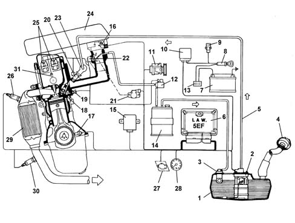
1, Fuel tank
2, Electric fuel pump
3, Multi-purpose valve
4, Safety valve
5, Fuel delivery pipe
6, Injection-ignition ECU
7, Battery
8, Ignition switch
9, Inertia switch
10, System relay
11, Climate control system
12, Fuel vapour cut-off valve
13, Ingition-injection system fuse
14, Activated carbon filter
15, Body Computer (tester connection and Fiat CODE signal)
16, Absolute pressure and temperature sensor
17, Rpm and TDC sensor
18, Spark plugs
19, Coolant temperature sensor
20, Injectors
21, Throttle valve position sensor
22, Idle speed actuator
23, Fuel supply manifold
24, Air cleaner
25, Ignition coils
26, Lambda probe
27, System failure warning light
28, Rev counter
29, Catalytic converter
30, Lambda probe (post catalyzer)
31, Injection timing sensor
During idling, the control unit checks:
- the moment of ignition
- the air flow with the benefit of maintaining correct operation of the engine when the environmental parameters and applied loads vary.
The control unit controls and manages fuel injection so that the stoichiometric ratio (air/fuel) is always at the optimum value.
The system's functions are basically as follows:
- system self-adaptation
- self test
- recognition of FIAT CODE
- control of cold starting
- control of combustion - Lambda sensors
- control of detonation
- control of mixture enrichment during acceleration
- fuel cut-off during overrunning
- fuel vapour recovery
- limitation of the maximum rpm
- fuel pump control
- connection to the climate control system
- recognition of cylinder position
- adjustment of injection times
- adjustment of ignition advance values
- control and management of the idle speed
- control of electric cooling fan.
Fuel injection system
The essential conditions that must always be met in the preparation of the air-fuel mixture for the correct operation of controlled-ignition engines are mainly:
- the 'metering' (air/fuel ratio) must constantly be kept as close as possible to the stoichiometric ratio, so as to ensure the necessary rapidity of combustion, avoiding unnecessary fuel consumption
- the 'homogeneity' of the mixture, consisting of petrol vapours, diffused as finely and evenly as possible in the air.
The injection/ignition system uses an indirect measuring system known as the 'SPEED DENSITY LAMBDA' type. in other words the angular rotation speed, density of the intake air and control of the mixture strength.
In practice the system uses data on the ENGINE SPEED (rpm) and AIR DENSITY (pressure and temperature) to measure the quantity of air drawn in by the engine.
The quantity of air drawn in by each cylinder, for each engine cycle depends not only on the density of the intake air, but also on the unit displacement and the volumetric efficiency.
The density of the air refers to that of the air drawn in by the engine and calculated according to the absolute pressure and the temperature, both detected in the inlet manifold.
Volumetric efficiency refers to the parameter relating to the coefficient for filling the cylinders measured on the basis of experimental tests carried out on the engine throughout the entire operating range and then stored in the electronic control unit memory.
Having established the quantity of intake air, the system has to provide the quantity of fuel according to the desired mixture strength.
The end of injection pulse or supply timing is contained in a map stored in the control unit memory and varies according to the engine speed and the pressure in the inlet manifold. In practice, it involves processing which the electronic control unit carries out to command the sequential, phased opening of the four injectors, one per cylinder, for the length of time strictly necessary to form the air/petrol mixture which is closest to the stoichiometric ratio.
The fuel is injected directly into the manifold near the inlet valve at a pressure of around 3.5 bar.
Whilst the speed (rpm) and the density of the air (pressure and temperature) are used to measure the quantity of intake air, which when established allows the quantity of fuel to be metered according to the desired mixture strength, the other sensors in the system (coolant temperature, butterfly valve position, battery voltage, etc.) allow the electronic control unit to correct the basic strategy for all engine operating conditions.
It is vital for the air/fuel ratio to be around the stoichiometric value for the correct and prolonged operation of the catalytic silencer and for the reduction of pollutant emissions.
Ignition system
The ignition is of the inductive discharge type, breakerless with power modules located in the electronic injection/ignition control unit.
The system has two high tension twin outlet coils joined in a single container and connected directly to the spark plugs.
The primary winding for each coil is connected to the power relay (thereby receiving the battery voltage) and to the pins for the electronic control unit for connection to earth.
After the starting stage, the electronic unit manages the basic advance taken from a special map according to the:
- engine rpm
- absolute pressure value (mbar) measured in the inlet manifold.
This advance value is corrected according to the temperature of the engine coolant and the intake air.
The spark plugs for cylinder 1-4 and 2-3 are connected directly (two at a time) by means of high tension leads to the terminals of the coil secondary winding and their connection is in series because the cylinder head joins them.
This solution is also known as the 'lost spark' becuse the energy accumulated by the coil is almost exclusively discharged at the electrodes for the spark plug of the cylinder under compression allowing the ignition of the mixture. The other spark is obviously not used, as no mixture is found in the cylinder to ignite, only exhaust gas.
Diagram of input/output info to/from control unit
The fuel level and engine oil presssure data reach the control unit via the CAN line.
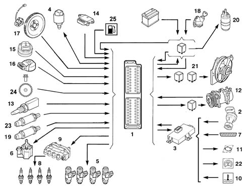
1, Electronic control unit
2, Speedometer sensor (or ABS where present)
3, Body Computer (with built-in Fiat CODE control unit)
4, Engine idle speed actuator
5, Fuel injectors
6, Fuel vapour solenoid valve
7, Diagnostic socket
8, Spark plugs
9, Ignition coils
10, Engine coolant overheating warning light
11, Injection failure warning light
12, Climate control system
13, Engine coolant temperature sensor
14, Intke air temperature and pressure sensor
15, Butterfly valve position sensor
16, Detonation sensor
17, Rpm and TDC sensor
18, Ignition switch
19, Lambda sensor (pre catalyzer)
20, Electric fuel pump
21, Radiator fan high and low speed relay feeds
22, Speedometer / milometer
23, Lambda sensor (post catalyzer)
24, Injection phase sensor
25, Fuel level sensor
System self-adaptation
The control unit has a self-adapation function which recognizes changes in the engine which occur as a result of bedding-in and ageing processes of both components and the engine itself.
These changes are stored in the form of modifications to the basic mapping, and their purpose is to adapt the operation of the system to the gradual alterations in the engine and components compared with their characteristics when new.
This self-adaptation function also makes it possible to even out inevitable differences (due to production tolerances) in any replaced components.
From the exhaust gas analysis, the control unit changes the basic mapping in relation to the original characteristics of the new engine.
The self-adaptation parameters are not cancelled if the battery is disconnected.
Self-diagnosis
The control unit's self-test system checks the signals coming from the sensors, comparing them with the permitted limits:
- indication of faults upon start-up:
- warning light on for 4 s indicates test stage
- warning light off after 4 secs indicates no faults in components that could affect the values established in emission control regulations
- warning light on after 4 secs indicates fault
- fault indication during operation
- warning light on indicates fault
- warning light off indicates no faults in components that could affect the values established in emission control regulations
- recovery
- the control unit defines as and when required the type of recovery depending on the faulty components
- the recovery parameters are managed by non-faulty components.
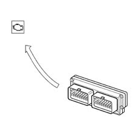
Recognition of FIAT CODE
When the control unit receives the ignition 'ON' signal, it dialogues with the Body Computer (Fiat CODE function) to obtain starting enablement.
Communication takes place via the CAN line which connects the two control units.
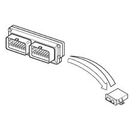
RECOGNITION OF CYLINDER POSITION
The engine timing signal, together with the engine rpm and top dead centre (TDC) signal, allows the control unit to recognize the succession of cylinders to implement phased injection.
This signal is generated by a Hall-effect sensor, positioned on the rocker cover near the phonic wheel formed on the camshaft pulley.
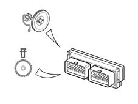
CONTROL OF COMBUSTION - LAMBDA SENSORS
In EOBD systems the Lambda sensors, which are all the same type but not interchangeable, are located one before (pre-) the catalyzer and one after (post-) the catalyzer.
The pre-catalyzer sensor carries out the check on the mixture strength called 1st loop (closed loop of the pre-catalyzer sensor).
The post catalyzer sensor is used for the catalyzer diagnosis and for finely modulating the 1st loop control parameters.
With this in mind, the adjustment of the second loop is designed to recover both production differences and the slight deviations which the response from the pre-catalyzer sensor may show as a result of ageing and pollution.
This check is called 2nd loop control (closed loop of post-catalyzer sensor).
Applies to: engines: 1.2 8v; production: da 12/03
EOBD (EUROPEAN ON BOARD DIAGNOSIS) SYSTEM
The implementation of the EOBD function is managed by the engine management control unit which manages the yellow warning light for the engine management system (EOBD) as described below.
The warning light: is activated on request by the engine control unit for about 4 seconds (check) when the ignition key is turned to 'MAR'.
The EOBD system carries out continuous diagnosis of the components related to the vehicle emissions system, signalling any deterioration of these components by the warning light in the panel coming on.
The aim of the system is:
- keeping the efficiency of the system under control;
- signalling an increase in emissions due to a vehicle malfunction;
- signalling the need to replace deteriorated components.
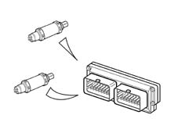
Applies to: engines: 1.2 8v; all production periods
Operation when cold
Under these circumstances there is a natural weakening of the mixture because of the poor turbulence of the fuel particles at low temperatures, reduced evaporation and condensation on the inner walls of the inlet manifold, all of which is exacerbated by the increased viscosity of the lubricant oil which, as is well known, increases the rolling torque of the engine mechanical components at low temperatures.
The electronic control unit recognizes this condition on the basis of the coolant temperature signal, increasing the basic injection time.
Whilst the engine is warming up, the electronic control unit also operates the stepping motor which determines the quantity of air needed to ensure that the engine does not cut out.
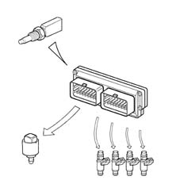
Operation under full load
Operation in full load conditions is detected, by the control unit, through the values supplied by the butterfly position and absolute pressure sensors.
In full load conditions, the basic injection time must be increased to obtain the maximum power supplied by the engine.
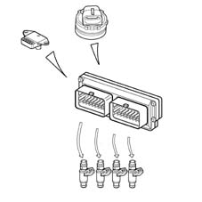
Operation during over-run
During this stage the engine has two strategies:
- A negative, transitory strategy to keep the quantity of fuel supplied to the engine at the stoichiometric value (less pollution). This stage is recognized by the control unit when the butterfly potentiometer signal goes from a high voltage reading to a lower one.
- A soft accompaniment strategy at the lower speed (dash-pot) to lessen the variation in the torque supplied (reduced engine braking).
Barometric correction
Atmospheric pressure varies according to the altitude creating a variation in the volumetric efficiency which requires correction of the basic mixture strength (injection time).
The correction of the injection time depends on the variation in altitude and is automatically updated by the electronic control unit each time the engine is switched off and in certain butterfly position and rpm conditions. (for example at low speeds and with the butterfly wide open)
Operation during cut-off
The fuel cut-off strategy is implemented when the control unit recognizes the butterfly valve in the idle position and the engine speed is 1350 rpm (variable indicative value).
The control unit only enables the cut-off when the engine temperature exceeds 0° C.
The control unit with engine speed of 1270 rpm (variable indicative value) and butterfly valve in open position, re-enables the fuel supply to the engine.
For very high speeds the cut-off is implemented even when the throttle is not completely closed, but when the pressure in the inlet manifold is particularly low (partial cut-off).
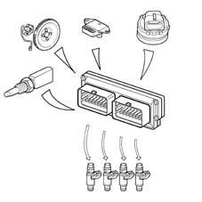
Operation during acceleration
During this stage, the control unit increases the quantity of fuel requested by the engine as appropriate (to achieve maximum torque) according to the signals coming from the following components:
- throttle potentiometer;
- rpm and T.D.C. sensor.
The 'basic' injection time is multiplied by a coefficient which depends on the temperature of the engine coolant, the opening speed of the accelerator butterfly and the increase in pressure in the inlet manifold.
If the sharp variation in the injection time is calculated when the injector is already closed, the control unit reopens the injector (extra pulse) in order to compensate the mixture strength extremely quickly; the subsequent injections are already increased on the basis of the coefficients mentioned previously.
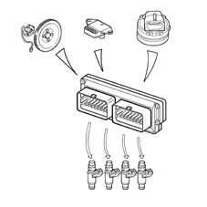
Protection against excess rpm
When the engine rotation speed exceeds 6500 rpm for more than 10 seconds or reaches the 'limit' of 6700 rpm set by the manufacturer for a moment, the engine is operating under 'critcal' conditions.
When the electronic control unit recognizes that the above speed has been exceeded, it prevents the operation of the injectors.
When the rotation speed returns to a non critical value, the operation is resumed.
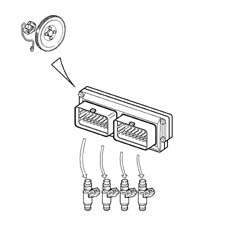
Fuel pump control
The electric fuel pump is controlled by the engine control unit by means of a relay.
The pump cuts out:
- if the engine speed goes below about 50 rpm
- after a certain period (about 5 seconds) with the ignition switch in the ON position without the engine being started up (timed go ahead)
- if the inertia switch has operated.
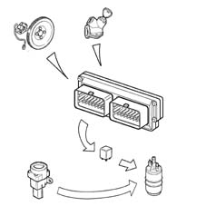
Injector control
The operation of the injectors is the sequential, phased type. However, during starting the injectors are operated once in parallel (full-group).
The timing of the injector operation varies according to the engine speed and pressure of the inlet air in order to improve the filling of the cylinders with advantages in terms of consumption, driveability and pollution.
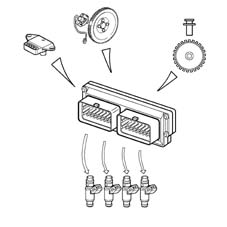
Check on knocking
The control unit detects the presence of knocking by processing the signal coming from the relevant sensor.
The strategy continuously compares the signal coming from the sensor with a threshold value, which, in turn, is continuously updated to take account of background noise and ageing of the engine.
If the system recognizes the presence of detonation, the strategy reduces the ignition advance until the detonation disappears; the advance ia then gradually reset to the basic value, or until detonation arises again. In particular, advance increases are implemented gradually, whilst reductions are implemented immediately.
Under acceleration conditions, a higher threshold is used to take account of the increased engine noise under such conditions.
The strategy also features a self-adaptation function which temporarily memorizes the reductions in the advance that may be continuously repeated, in order to adjust the advance to the different engine operating conditions (for example, the use of a low octane rating fuel). The strategy is capable of restoring the advance to the threshold value memorized when the conditions which have caused the reduction no longer exist.
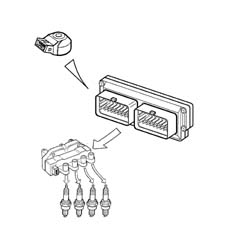
Management of radiator fan
The control unit directly controls the operation of the radiator fan according to the temperature of the engine coolant and the engagement of the climate control system.
The fan is switched on when the temperature exceeds 97° C (1st speed) and 101° C (2nd speed). The switching off takes place with a hysteresis of 3° C below the engagement threshold.
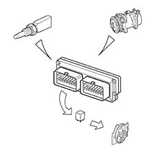
Engine idle management
The general aim of this strategy is to keep the engine idling at around the value memorized (engine warm: 750 rpm); the position of the actuator depends on the following engine conditions:
Starting stage
When the key is inserted, the position of the actuator depends on the temperature of the engine coolant and the voltage of the battery (open-loop position).
- Warming up stage
The engine speed is corrected, particularly on the basis of the engine coolant temperature.
When the optimum temperature is reached, the idle management depends only on the signal coming from the rpm sensor; when external loads are switched on, the control unit controls the actuator to adjust the rpm to the new conditions and to manage the engine load while maintaining the idle speed.
- Over-run
In deceleration conditions outside of idling, the control unit controls the position of the engine idle speed actuator by means of a special flow rate curve (dash-pot curve), in other words it slows down the return of the shutter towards its seating, improving the engine braking effect (fast idle).
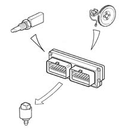
Management of fuel vapour recirculation
This strategy controls the position of the vapour cut out solenoid valve in the following way:
- during starting the solenoid remains closed, preventing the fuel vapours from enriching the mixture too much; this condition persists until the temperature of the coolant reaches 65° C;
- with the engine up to to temperature, the electronic control unit sends the solenoid a square-wave signal (duty cycle) which modules its opening.
In this way the control unit controls the quantity of fuel vapours sent to the inlet, preventing considerable variations in the mixture strength.
In the condition listed below, the operation of the solenoid valve is inhibitied, maintaining the same in the closed position; this improves engine operation:
- throttle valve in closed position
- engine speed below 1500 rpm
- inlet manifold pressure below the limit calculated by the control unit depending on the number of revs,
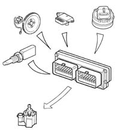
Climate control system management
The injection/ignition control unit is connected to the climate control system in that:
- it receives the request to switch on the compressor and make the related interventions (additional air);
- it gives the go ahead to switch on the compressor, when the conditions covered by the strategies have arisen;
- it receives information on the state of the four-stage pressure switch and makes the appropriate interventions (radiator fan operation).
If the engine is idling, the control unit increases the flow rate of the air passing from the idle actuator before the compressor is switched on and, viceversa, it returns the actuator to the normal position after the compressor is switched off.
The control unit disengages the compressor:
- if the coolant temperature exceeds a certain threshold
- if the engine rpm is below 700 rpm.
The control unit temporarily controls the disengagement of the compressor (for a few seconds):
- during high power requests from the engine (strong acceleration)
- during engine pickup:
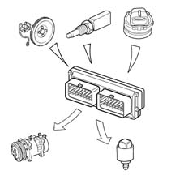
Air temperature sensor
If the error is present during starting:
- it assumes a value of 50 ° C
- self-adjustment of the mixture strength is inhibited.
If the error is present in other conditions:
- the last valid value is memorized and updated according to the engine temperature.
Knock sensor
If the sensor is faulty, the engine control unit implements more conservative ignition advance 'maps' to safeguard the engine.
Pressure sensor
If the failure is present during starting, it uses a value of 1024 mbar.
During operation the value used is calculated on the basis of parameters supplied by the throttle valve position sensor and the rpm sensor.
Self-adjustment of the mixture strength is inhibited.
throttle valve position sensor
In the case of a fault, a value calculated from the absolute pressure sensor readings is set, and if this sensor is broken, a fixed value equal to a throttle opening of 50 degrees is set.
The mixture strength and idle self-adjustment dash-pot strategies are suspended.
Vehicle speed sensor
The last vehicle speed value memorized is assumed.
Coolant temperature sensor
In the case of a fault, the control unit inhibits self-adjustment of the mixture strength and idle.
It sets the last temperature value measured; if this does not correspond to the working temperature, the control unit increases it gradually in accordance to the time since the engine was started until the theoretical 80° C is reached.
In addition when the ignition is switched on, the radiator cooling fan is switched on permanently at the second speed.
Engine idle speed actuator
In the event of a fault, the operation of the actuator is disabled and self-adjustment of the idle mixture strength is stopped.
IAW 59F injection/ignition control unit
The control unit is fitted in the engine compatment on the inlet manifold air chamber, and can withstand high temperatures.
It is a digital type with a microprocessor, featuring a high calculation capacity, precision, reliability, versatility and low energy consumption and is maintenance-free.
The task of the electronic control unit is to process the signals coming from the various sensors through the application of software algorithms and control the operation of the actuators (in particular the injectors, ignition coils and idle actuator) in order to ensure optimum engine operation.
The adoption of the Fiat CODE does not allow control units to be exchanged between cars.
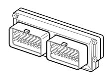
Pin-out
The diagram below shows the control unit pins.
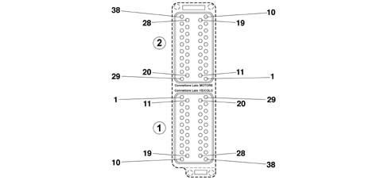
(1) CONNECTOR FOR VEHICLE SIDE WIRING
1 Post-catalyzer Lambda sensor heater (-)
2 Not connected
3 Engine overheating warning light
4 Control unit supply (+30)
5 Not connected
6 Fuel injection main relay control
7 Code control unit connection
8 Radiator fan 1st speed relay control
9 Rev counter signal
10 Not connected
11 Pre-catalyzer Lambda sensor heater (-)
12 Air conditioner compressor relay control
13 EOBD warning light
14 Not connected
15 Not connected
16 Serial line K
17 Ignition-controlled supply (+15)
18 Radiator fan 2nd speed relay control
19 Not connected
20 Bidirection C.A.N. (HIGH) line
21 Post-catalyzer Lambda sensor signal (-)
22 Pre-catalyzer Lambda sensor signal (+)
23 Not connected
24 Speedometer signal
25 Not connected
26 Not connected
27 Air conditioner activation signal
28 Request from quadrinary for radiator fan 1st speed
29 Bidirectional C.A.N. (LOW) line
30 Not connected
31 Post-catalyzer Lambda sensor signal (+)
32 Pre-catalyzer Lambda sensor signal (-)
33 Fuel reserve signal
34 Lambda sensor shielding
35 Not connected
36 Not connected
37 Not connected
38 Request from quadrinary for radiator fan 2nd speed
(2) CONNECTOR FOR ENGINE SIDE WIRING (2)
1 Not connected
2 Not connected
3 Throttle valve position sensor
4 Not connected
5 Water temperature sensor
6 Knock sensor (+)
7 Not connected
8 Knock sensor shielding
9 Idle actuator control
10 Ignition coil control (cylinders 2-3)
11 Not connected
12 Not connected
13 Absolute pressure sensor
14 Air temperature sensor
15 Knock sensor (-)
16 Not connected
17 Idle actuator control
18 Idle actuator control
19 Idle actuator control
20 Earth for butterfly valve potentiometer and timing sensor
21 Not connected
22 +5V supply for absolute pressure and air temperature sensors
23 Minimum oil pressure switch
24 Timing sensor signal
25 Rpm and TDC sensor (+)
26 Canister solenoid control
27 Cylinder 4 injector control
28 Cylinder 2 injector control
29 Earth for water, absolute pressure and air temperature sensors
30 Not connected
31 Not connected
32 +5V supply for timing and butterfly position sensors
33 Not connected
34 Rpm and timing sensor shielding
35 Rpm and TDC sensor (-)
36 Cylinder 2 injector control
37 Cylinder 3 injector control
38 Ignition coil control (cylinders 1 - 4)
Electronic control unit
The injectors are the (peak) miniature type with a supply of 12 V and an internal resistance of 13.8 - 15.2 ohm at 20° C.
The injectors are fixed by the manifold which presses them into their housings in the inlet manifold ducts, whilst two rubber seals (1) and (2) seal the inlet manifold and the fuel manifold.
The fuel is supplied from above (3) the injector, which contains the winding (4) connected to the terminals (5) of the electrical connector (6).
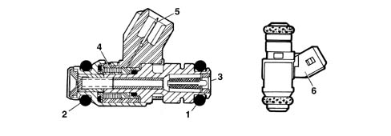
Operation
The fuel jet at the absolute pressure of 3.5 bar, by means of the returnless system, emerges from the injector and is instantly atomized.
The control logic for the injectors is the sequential, phased type, in other words the four injectors are operated according to the inlet sequences.
SPECIFCATIONS
The fuel manifold is fixed to the inner part of the inlet manifold and its function is to send the fuel to the injectors.
On the fuel manifold, in addition to the fuel injector seats, there is a rapid attachment for connection with the fuel supply pipe and an attachment for checking the fuel supply pressure.
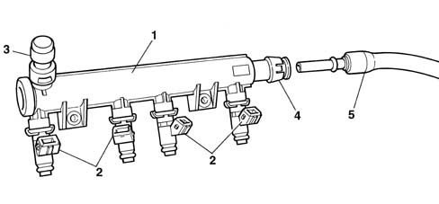
1, Fuel manifold
2, Injector
3, Attachment for fuel drainage pressure
4, Rapid attachment
5, Fuel delivery pipe
Electronic control unit
This is mounted on the thermostatic cup, and it measures the coolant temperature by means of an NTC thermistor with a negative resistance coefficient.
Electrical characteristics
° C | O |
|---|---|
-20 | 15971 |
-10 | 9620 |
0 | 5975 |
10 | 3816 |
20 | 2502 |
25 | 2044 |
30 | 1679 |
40 | 1152 |
50 | 807 |
60 | 576 |
70 | 418 |
80 | 309 |
90 | 231 |
100 | 176 |
Operation
The reference voltage for the NTC element for the injection system is 5 Volt; as the input circuit into the control unit is designed as a voltage divider, this voltage is divided between a resistor located in the control unit and the sensor's NTC resistor.
The control unit is thus able to assess the changes in the sensor's resistance via the changes in voltage, and thus obtain the temperature information.
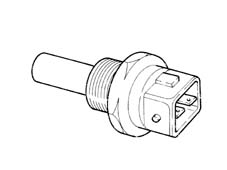
Components
The components which make up the sensor are:
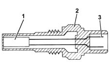
1, N.T.C. resistor
2, Sensor body
3, Electrical connector
Electronic control unit
The piezoelectric type detonation sensor is fitted on the cylinder block/crankcase and detects the intensity of the vibrations caused by the detonation in the combustion chambers.
This phenomenon produces a mechanical repercussion on a piezoelectric crystal which sends a signal to the control unit; on the basis of this signal, the control unit reduces the ignition advance until the phenomenon (detonation) has disappeared.
The advance is then gradually restored to the optimum basic operating value.
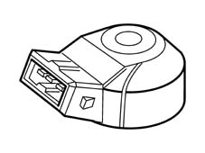
Operation
The molecules of a quartz crystal feature electrical polarization.
In rest conditions (A) the molecules do not have a particular direction.
When the quartz crystal is subjected to pressure or an impact (B), they are directed - the higher the pressure to which the crystal is subjected, the more marked their direction.
This direction produces a voltage at the ends of the crystal.
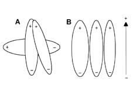
A, Rest position
B, Position under pressure
Electrical characteristics
resistance: 532-588 ohm at 20° C.
Electronic control unit
It is fitted on the cylinder block/crankcase and 'faces' the phonic wheel on the crankshaft pulley.
It is of the inductive type, i.e. it functions by means of the variation in the magnetic field generated by the passage of the flywheel teeth (60 - 2 teeth).
The fuel injection control unit uses the rpm sensor to:
- determine the crankshaft rotation speed
- determine the angle of the crankshaft.
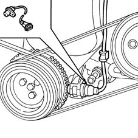
Components
The sensor consits of a tubular casing (1) which contains a permanent magnet (3) and an electrical winding (2).
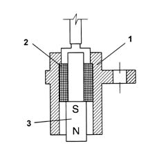
Operation
As the flywheel teeth go past, the magnetic flow produced by the magnet (3) undergoes fluctuations due to the change in the gap.
These fluctuations induce an electromotive force in the winding (2), at the ends of which there is a voltage which alternates between positive (tooth opposite sensor) and negative (gap opposite sensor).
The peak value of the output voltage from the sensor, provided other factors remain the same, depends on the distance between the sensor and tooth (gap).
The phonic wheel comprises sixty teeth, two of which have been removed to create a reference: the pitch of the wheel thus corresponds to an angle of 6° (360° divided by 60 teeth).
The synchronization point is recognized at the end of the first tooth after the space created by the two missing teeth: when this passes under the sensor, the pair of pistons 1-4 of the engine are at 114 degrees before TDC.
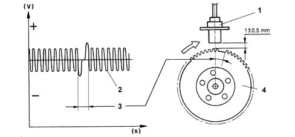
1, Sensor
2, Output signal
3, Signal corresponding to the two missing teeth
4, Crankshaft pulley with flywheel
Electrical characteristics
resistance: 1134-1386 ohm at 20° C.
The distance (gap) for obtaining correct signals, between the end of the sensor and the flywheel, should be between 0.5 and 1.5 mm.
Electronic control unit
This has the task of metering the amount of air supplied to the engine (and consequently the power developed) according to the request from the driver via the accelerator.
The butterfly casing is fixed to the intake manifold; the butterfly is opened by means of a non linear linkage which, depending on the pedal travel, produces small butterfly opening angles in the first section of the accelerator pedal travel and, conversely, greater angles with the pedal very depressed.
With the pedal completely released (engine decelerating or idling) the additional air required is supplied by the engine idle speed actuator; under these circumstances, the throttle opening lever comes up against an anti-tamper screw which prevents the throttle from getting stuck in the closed position.
The butterfly valve position sensor and the engine idle speed actuator are also fitted on the throttle body.
COMPOSITION
The diagram below shows the main components of the throttle body.
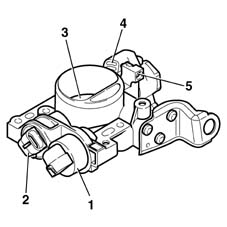
1, Engine idle speed actuator
2, Butterfly valve position sensor (cannot be separated)
3, Butterfly valve
4, Butterfly opening linkage
5, Butterfly valve end-of-travel or anti-tamper screw (not to be tampered with)
COMPOSITION
The end-of-travel stop (5) is set during through-flow at the factory and should never be tampered with.
Electronic control unit
This sensor consists of a potentiometer where the moving part is controlled by the butterfly valve shaft.
The potentiometer is in a plastic container which is designed to guarantee the mounting and the correct positioning of the sensor in relation to the throttle.
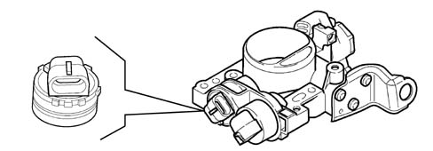
Components
Composition of the linear type potentiometer (single ramp):
- Total mechanical travel of the potentiometer: 110° ± 8°
- Operating range: 90° ± 2°
- Temperature operating range: -30° C - +125° C
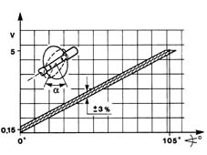
Operation
During operation, the control unit provides the potentiometer with a 5 Volt supply.
The parameter measured is the butterfly position from minimum to full opening for the management of the injection.
On the basis of the output voltage, the control unit recognizes the throttle valve opening condition and suitably corrects the mixture strength.
With the throttle closed, an electrical voltage signal is sent to the control unit which recognizes the idle and cut-off conditions (distinguishing between them on the basis of the engine speed).
Electrical characteristics
Fixed resistance (between pins A and B) = 1200 ohm
Variable resistance (between pins A and C) = 0 - 1200 ohm ± 20%.
composition
The actuator, fixed to the throttle body, consists of:
- An electrical stepper motor with two windings in the stator and a rotor composed of pairs of permanent magnet poles.
- A worm and nutscrew type reduction gear which converts rotary motion into rectilinear motion.
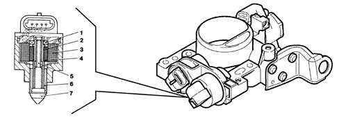
1, Bearing
2, Female screw
3, Coils
4, Magnet
5, Screw
6, Anti-rotation splining
7, Shutter
Electronic control unit
The electrical stepper motor features a high degree of precision and rapid resolution (about 220 steps per second). The impulses sent by the electronic control unit to the engine are transformed from a rotary motion into a linear motion (about 0.04 mm/step) by means of a screw-nutscrew type mechanism; when the shutter is operated, the section of the bypass duct is varied (+ or -).
The constant value of the minimum air flow rate (Qo) is due to the leakage (fixed flow) fromr the butterfly valve which is regulated (end of travel) in production and guaranteed by an anti-tamper plug. The maximum flow rate (Q2) is guaranteed by the shutter in the fully retracted position (about 220 steps corresponding to 8.8 mm). The law shown in the graph below applies between these two air flow rate values:
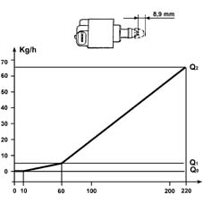
Operation
In order to idle, i.e. with the butterfly (4) completely closed, the engine requires a certain amount of air (Qo fixed flow) and fuel to overcome the internal friction and sustain its rotation speed.
To the amount of air (Qo) arriving from the filter, which during idling leaks through the butterfly valve (4) in the closed position,
should be added, during the engine warm-up stage or the switching on of electrical devices or external loads (air conditioner, etc.), a further quantity of air (Q) to allow the engine to maintain a constant rpm.
To achieve this result the system uses a stepping motor (1) operated by a circuit (6) inside the injection/ignition electronic control unit which, when operating, moves a stem with a shutter (3) which alters the section of the by-pass duct (2) and, consequently, the quantity of air (Qo + Q) drawn in by the engine.
To adjust this type of action, the electronic unit uses the engine angular speed and coolant temperature parameters, coming from the respective sensors.
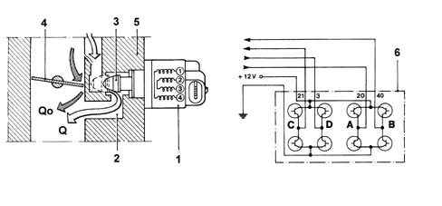
Q, quantity of air regulated by the actuator (variable flow)
Qo, quantity of air leaking through the butterfly (constant flow)
Electronic control unit
The intake air temperature and pressure sensor is a component which is designed to measure the pressure and the temperature of the air inside the inlet manifold. Both pieces of information are used by the injection control unit to define the quantity of air drawn in by the engine; this information is then used to calculate the injection time and the point of ignition. The sensor is fitted on the inlet manifold.
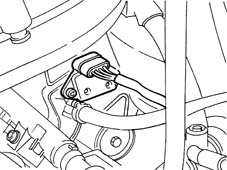
Electronic control unit
The air temperature sensor consists of an NTC thermistor (Negative Temperature Coefficient). - The resistance of the sensor decreases as the temperature increases. The control unit input circuit divides the 5 Volt reference voltage between the sensor resistance and a fixed reference value, obtaining a voltage which is proportional to the resistance and therefore to the temperature.
The sensitive element of the pressure sensor consits of a Wheatstone bridge on a cermamic diaphragm.
On one side of the diaphgram is the absolute reference vacuum, whilst the vacuum from the inlet manifold acts on the other side. The (piezoresistive) signal from the distortion suffered by the diaphragm, before being sent to the engine control unit, is amplified by an electronic circuit in the support which also houses the ceramic diaphragm. When the engine is off, the diaphragm bends in accordance with the atmospheric pressure; the altitude information is thus obtained.
When the engine is running, the effect of the intake pressure produces a mechanical action on the sensor diaphgram, which bends, altering the resistance value. Since the supply is kept rigorously constant (5V) by the control unit, altering the resistance alters the voltage output value.
Electrical characteristics
The diagram below shows the electrical characteristics of the pressure and intake air temperature sensor.
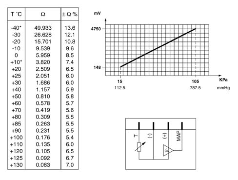
COMPOSITION
The coils are fixed, by a bracket, to the camshaft covers and are the closed magnetic circuit type formed by a lamellar pack whose central core, made from silicon steel with a thin gap, contains both windings.
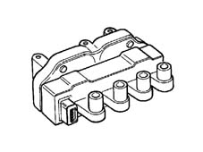
COMPOSITION
The windings are covered by a pressed plastic container and are insulated through immersion in an epoxy resin and quartz compound which gives them exceptional dielectric, mechanical and thermal properties enabling them to withstand high temperatures. The proximity of the primary winding to the magnetic core reduces the magnetic flow losses optimizing the coupling with the secondary winding.
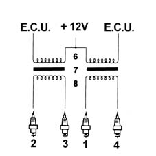
1, H.T. socket for spark plug for cylinder 1
2, H.T. socket for spark plug for cylinder 2
3, H.T. socket for spark plug for cylinder 3
4, H.T. socket for spark plug for cylinder 4
5, L.T. socket for control unit connection
6, Primary circuit
7, Gap
8, Secondary circuit
Electrical characteristics
Primary circuit resistance: 0.52-0.62 ohm at 23° C
Secondary circuit resistance: 0.52-0.62 ohm at 23° C
SPECIFCATIONS
The sensor is located at the differential output, near the left drive shaft joint, and transmits the vehicle speed signal to the body computer; the body computer then makes this signal available on the CAN network.
The control unit obtains the vehicle speed information: the signal is also used for the operation of the speedometer.
The Hall effect sensor transmits 16 impulses/rev; according to the frequency of the impulses it is possible to ascertain the speed of the vehicle.
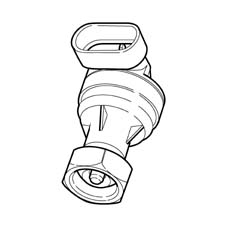
COMPOSITION
The sensor is of the Hall-effect type. A semiconducting layer, through which current passes, immersed in a perpendicular magnetic field, generates at its ends a difference in potential known as Hall voltage.
OPERATING
The force lines perpendicular to the current direction generate at the ends a different in potential (called Hall voltage).
If the integrity of the current remains constant, the voltage generated depends only on the intensity of the magnetic field; the intensity of the field simply has to vary perpendicularly to produce a modulated electrical signal, whose frequency is proportional to the speed with which it changes magnetic field.
To obtain this change, the distance between the sensor and the pulley on the camshaft varies, as it has three marks, one at 90° and two at 45°. In the rotation of the pulley, the distance varies and a low voltage signal is generated, corresponding to each mark.
Vice versa, where these three marks are not present, the sensor generates a higher voltage signal.
Consequently the high signal alternates with the low signal, six times for each engine cycle.
This signal, together with the rpm and TDC signal (on the crankshaft), allows the control unit to recognize the cylinders and determine the exact point of injection and ignition.
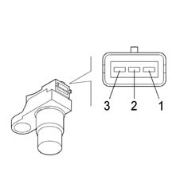
1, Earth
2, Output or signal
3, Supply voltage
Applies to: engines: 1.6 16v; all production periods
The Marelli IAW 5NF system belongs to the category of systems integrated with:
- inductive discharge digital electronic ignition
- distributorless
- sequential, phased electronic injection (1-3-4-2).
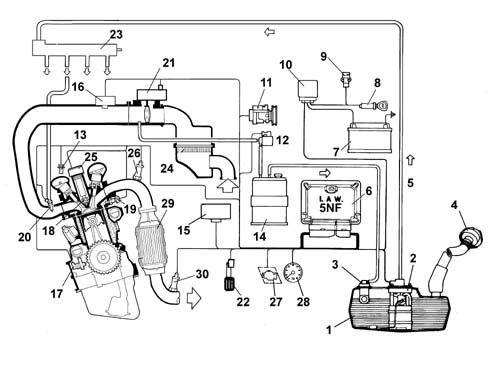
1, Fuel tank
2, Electric fuel pump
3, Multi-purpose valve
4, Safety valve
5, Fuel delivery pipe
6, Injection-ignition ECU
7, Battery
8, Ignition switch
9, Inertia switch
10, Engine compartment junction unit
11, Climate control system
12, Fuel vapour cut-off valve
13, Injection timing sensor
14, Activated carbon filter
15, Body Computer (tester connection and Fiat CODE signal)
16, Absolute pressure and temperature sensor
17, Rpm and TDC sensor
18, Spark plugs
19, Coolant temperature sensor
20, Injectors
21, Throttle and throttle position sensor actuator
22, Accelerator pedal potentiometer
23, Fuel supply manifold
24, Air cleaner
25, Ignition coils
26, Lambda probe
27, System failure warning light
28, Rev counter
29, Catalytic converter
30, Lambda probe (post catalyzer)
During idling, the control unit checks:
- the moment of ignition
- the air flow with the benefit of maintaining correct operation of the engine when the environmental parameters and applied loads vary.
The control unit controls and manages fuel injection so that the stoichiometric ratio (air/fuel) is always at the optimum value.
The system's functions are basically as follows:
- system self-adaptation
- self test
- recognition of FIAT CODE
- control of cold starting
- control of combustion - Lambda sensors
- control of detonation
- control of mixture enrichment during acceleration
- fuel cut-off during overrunning
- fuel vapour recovery
- limitation of the maximum rpm
- fuel pump control
- connection to the climate control system
- recognition of cylinder position
- adjustment of injection times
- adjustment of ignition advance values
- control and management of the idle speed
- control of electric cooling fan.
Fuel injection system
The essential conditions that must always be met in the preparation of the air-fuel mixture for the correct operation of controlled-ignition engines are mainly:
- the 'metering' (air/fuel ratio) must constantly be kept as close as possible to the stoichiometric ratio, so as to ensure the necessary rapidity of combustion, avoiding unnecessary fuel consumption
- the 'homogeneity' of the mixture, consisting of petrol vapours, diffused as finely and evenly as possible in the air.
The injection/ignition system uses an indirect measuring system known as the 'SPEED DENSITY LAMBDA' type. in other words the angular rotation speed, density of the intake air and control of the mixture strength.
In practice the system uses data on the ENGINE SPEED (rpm) and AIR DENSITY (pressure and temperature) to measure the quantity of air drawn in by the engine.
The quantity of air drawn in by each cylinder, for each engine cycle depends not only on the density of the intake air, but also on the unit displacement and the volumetric efficiency.
The density of the air refers to that of the air drawn in by the engine and calculated according to the absolute pressure and the temperature, both detected in the inlet manifold.
Volumetric efficiency refers to the parameter relating to the coefficient for filling the cylinders measured on the basis of experimental tests carried out on the engine throughout the entire operating range and then stored in the electronic control unit memory.
Having established the quantity of intake air, the system has to provide the quantity of fuel according to the desired mixture strength.
The end of injection pulse or supply timing is contained in a map stored in the control unit memory and varies according to the engine speed and the pressure in the inlet manifold. In practice, it involves processing which the electronic control unit carries out to command the sequential, phased opening of the four injectors, one per cylinder, for the length of time strictly necessary to form the air/petrol mixture which is closest to the stoichiometric ratio.
The fuel is injected directly into the manifold near the inlet valve at a pressure of around 3.5 bar.
Whilst the speed (rpm) and the density of the air (pressure and temperature) are used to measure the quantity of intake air, which when established allows the quantity of fuel to be metered according to the desired mixture strength, the other sensors in the system (coolant temperature, butterfly valve position, battery voltage, etc.) allow the electronic control unit to correct the basic strategy for all engine operating conditions.
It is vital for the air/fuel ratio to be around the stoichiometric value for the correct and prolonged operation of the catalytic silencer and for the reduction of pollutant emissions.
Ignition system
The ignition is of the inductive discharge type, breakerless with power modules located in the electronic injection/ignition control unit.
The system has a coil for each cylinder connected directly to the spark plug.
The primary winding for each coil is connected to the power relay (thereby receiving the battery voltage) and to the pins for the electronic control unit for connection to earth.
After the starting stage, the electronic unit manages the basic advance taken from a special map according to the:
- engine rpm
- absolute pressure value (mbar) measured in the inlet manifold.
This advance value is corrected according to the temperature of the engine coolant and the intake air.
Diagram of input/output info to/from control unit
The fuel level and engine oil presssure data reach the control unit via the CAN line.
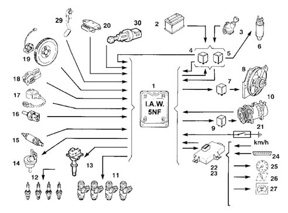
1, Engine control unit
2, Battery
3, Ignition
4, Engine control system relay
5, Fuel pump relay
6, Fuel pump
7, Radiator fan relay/s
8, Radiator fan
9, Compressor activation relay
10, Compressor
11, Injectors
12, Spark plugs
13, Ignition coils
14, Carbon filter flushing solenoid
15, Lambda sensors (pre-catalyzer and post-catalyzer)
16, Coolant temperature sensor
17, Knock sensor
18, Throttle and throttle position sensor actuator
19, Engine rpm and TDC sensor
20, Air pressure and absolute temperature sensor
21, Engine oil pressure switch
22, Body computer
23, CODE control unit (body computer) (via CAN)
24, Tester connection (via CAN line)
25, Rev counter (via CAN line)
26, System failure bulb (via CAN line)
27, Speedometer (via CAN line)
28, Injection timing sensor
29, Accelerator pedal sensor
30, Clutch pedal switch
31, Coolant temperature sensor
System self-adaptation
The control unit has a self-adapation function which recognizes changes in the engine which occur as a result of bedding-in and ageing processes of both components and the engine itself.
These changes are stored in the form of modifications to the basic mapping, and their purpose is to adapt the operation of the system to the gradual alterations in the engine and components compared with their characteristics when new.
This self-adaptation function also makes it possible to even out inevitable differences (due to production tolerances) in any replaced components.
From the exhaust gas analysis, the control unit changes the basic mapping in relation to the original characteristics of the new engine.
The self-adaptation parameters are not cancelled if the battery is disconnected.
Self-diagnosis
The control unit's self-test system checks the signals coming from the sensors, comparing them with the permitted limits:
- indication of faults upon start-up:
- warning light on for 4 s indicates test stage
- warning light off after 4 secs indicates no faults in components that could affect the values established in emission control regulations
- warning light on after 4 secs indicates fault
- fault indication during operation
- warning light on indicates fault
- warning light off indicates no faults in components that could affect the values established in emission control regulations
- recovery
- the control unit defines as and when required the type of recovery depending on the faulty components
- the recovery parameters are managed by non-faulty components.
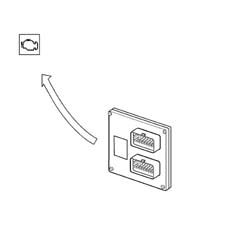
Recognition of FIAT CODE
When the control unit receives the ignition 'ON' signal, it dialogues with the Body Computer (Fiat CODE function) to obtain starting enablement.
Communication takes place via the CAN line which connects the two control units.
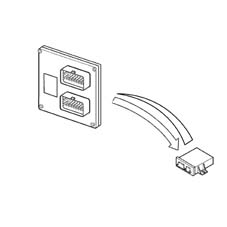
RECOGNITION OF CYLINDER POSITION
The engine timing signal, together with the engine rpm and top dead centre (TDC) signal, allows the control unit to recognize the succession of cylinders to implement phased injection.
This signal is generated by a Hall-effect sensor, positioned on the rocker cover near the phonic wheel formed on the camshaft pulley.
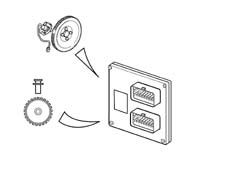
CONTROL OF COMBUSTION - LAMBDA SENSORS
In EOBD systems the Lambda sensors, which are all the same type but not interchangeable, are located one before (pre-) the catalyzer and one after (post-) the catalyzer.
The pre-catalyzer sensor carries out the check on the mixture strength called 1st loop (closed loop of the pre-catalyzer sensor).
The post catalyzer sensor is used for the catalyzer diagnosis and for finely modulating the 1st loop control parameters.
With this in mind, the adjustment of the second loop is designed to recover both production differences and the slight deviations which the response from the pre-catalyzer sensor may show as a result of ageing and pollution.
This check is called 2nd loop control (closed loop of post-catalyzer sensor).
Applies to: engines: 1.6 16v; production: da 12/03
EOBD (EUROPEAN ON BOARD DIAGNOSIS) SYSTEM
The implementation of the EOBD function is managed by the engine management control unit which manages the yellow warning light for the engine management system (EOBD) as described below.
The warning light: is activated on request by the engine control unit for about 4 seconds (check) when the ignition key is turned to 'MAR'.
The EOBD system carries out continuous diagnosis of the components related to the vehicle emissions system, signalling any deterioration of these components by the warning light in the panel coming on.
The aim of the system is:
- keeping the efficiency of the system under control;
- signalling an increase in emissions due to a vehicle malfunction;
- signalling the need to replace deteriorated components.
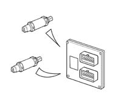
Applies to: engines: 1.6 16v; all production periods
Operation when cold
Under these circumstances there is a natural weakening of the mixture because of the poor turbulence of the fuel particles at low temperatures, reduced evaporation and condensation on the inner walls of the inlet manifold, all of which is exacerbated by the increased viscosity of the lubricant oil which, as is well known, increases the rolling torque of the engine mechanical components at low temperatures.
The electronic control unit recognizes this condition on the basis of the coolant temperature signal, increasing the basic injection time.
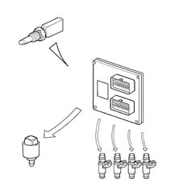
Operation under full load
Operation in full load conditions is detected, by the control unit, through the values supplied by the butterfly position and absolute pressure sensors.
In full load conditions, the basic injection time must be increased to obtain the maximum power supplied by the engine.
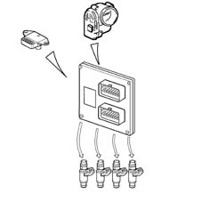
Operation during over-run
During this stage the engine has two strategies:
- A negative, transitory strategy to keep the quantity of fuel supplied to the engine at the stoichiometric value (less pollution). This stage is recognized by the control unit when the butterfly position signal goes from a high voltage reading to a lower one.
- A soft accompaniment strategy at the lower speed (dash-pot) to lessen the variation in the torque supplied (reduced engine braking).
Barometric correction
Atmospheric pressure varies according to the altitude creating a variation in the volumetric efficiency which requires correction of the basic mixture strength (injection time).
The correction of the injection time depends on the variation in altitude and is automatically updated by the electronic control unit each time the engine is switched off and in certain butterfly position and rpm conditions. (for example at low speeds and with the butterfly wide open)
Operation during cut-off
The fuel cut-off strategy is implemented when the control unit recognizes the butterfly valve in the idle position and the engine speed is 1350 rpm (variable indicative value).
The control unit only enables the cut-off when the engine temperature exceeds 0° C.
The control unit with engine speed of 1270 rpm (variable indicative value) and butterfly valve in open position, re-enables the fuel supply to the engine.
For very high speeds the cut-off is implemented even when the throttle is not completely closed, but when the pressure in the inlet manifold is particularly low (partial cut-off).
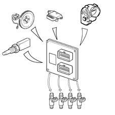
Operation during acceleration
During this stage, the control unit increases the quantity of fuel requested by the engine as appropriate (to achieve maximum torque) according to the following signals:
- throttle position;
- rpm and TDC signal
The 'basic' injection time is multiplied by a coefficient which depends on the temperature of the engine coolant, the opening speed of the accelerator butterfly and the increase in pressure in the inlet manifold.
If the sharp variation in the injection time is calculated when the injector is already closed, the control unit reopens the injector (extra pulse) in order to compensate the mixture strength extremely quickly; the subsequent injections are already increased on the basis of the coefficients mentioned previously.
Protection against excess rpm
When the engine rotation speed exceeds 6500 rpm for more than 10 seconds or reaches the 'limit' of 6700 rpm set by the manufacturer for a moment, the engine is operating under 'critcal' conditions.
When the electronic control unit recognizes that the above speed has been exceeded, it prevents the operation of the injectors.
When the rotation speed returns to a non critical value, the operation is resumed.
Fuel pump control
The electric fuel pump is controlled by the engine control unit by means of a relay.
The pump cuts out:
- if the engine speed goes below about 50 rpm
- after a certain period (about 5 seconds) with the ignition switch in the ON position without the engine being started up (timed go ahead)
- if the inertia switch has operated.
Injector control
The operation of the injectors is the sequential, phased type. However, during starting the injectors are operated once in parallel (full-group).
The timing of the injector operation varies according to the engine speed and pressure of the inlet air in order to improve the filling of the cylinders with advantages in terms of consumption, driveability and pollution.
Check on knocking
The control unit detects the presence of knocking by processing the signal coming from the relevant sensor.
The strategy continuously compares the signal coming from the sensor with a threshold value, which, in turn, is continuously updated to take account of background noise and ageing of the engine.
If the system recognizes the presence of detonation, the strategy reduces the ignition advance until the detonation disappears; the advance ia then gradually reset to the basic value, or until detonation arises again. In particular, advance increases are implemented gradually, whilst reductions are implemented immediately.
Under acceleration conditions, a higher threshold is used to take account of the increased engine noise under such conditions.
The strategy also features a self-adaptation function which temporarily memorizes the reductions in the advance that may be continuously repeated, in order to adjust the advance to the different engine operating conditions (for example, the use of a low octane rating fuel). The strategy is capable of restoring the advance to the threshold value memorized when the conditions which have caused the reduction no longer exist.
Management of radiator fan
The control unit directly controls the operation of the radiator fan according to the temperature of the engine coolant and the engagement of the climate control system.
The fan is switched on when the temperature exceeds 97° C (1st speed) and 101° C (2nd speed). The switching off takes place with a hysteresis of 3° C below the engagement threshold.
Engine idle management
The control unit recognizes the idle condition from the accelerator pedal being in the 'released' position. - According to the consumers switched on and the brake/clutch pedal signals, the control unit controls the position of the motorized butterfly.
The idle speed when warm is 700 ± 50 rpm.
- Warming up stage
The engine speed is corrected, particularly on the basis of the engine coolant temperature.
When the optimum temperature is reached, the idle management depends only on the signal coming from the rpm sensor; when external loads are switched on, the control unit controls the actuator to adjust the rpm to the new conditions and to manage the engine load while maintaining the idle speed.
Management of fuel vapour recirculation
This strategy controls the position of the vapour cut out solenoid valve in the following way:
- during starting the solenoid remains closed, preventing the fuel vapours from enriching the mixture too much; this condition persists until the temperature of the coolant reaches 65° C;
- with the engine up to to temperature, the electronic control unit sends the solenoid a square-wave signal (duty cycle) which modules its opening.
In this way the control unit controls the quantity of fuel vapours sent to the inlet, preventing considerable variations in the mixture strength.
In the condition listed below, the operation of the solenoid valve is inhibitied, maintaining the same in the closed position; this improves engine operation:
- throttle valve in closed position
- engine speed below 1500 rpm
- inlet manifold pressure below the limit calculated by the control unit depending on the number of revs,
Climate control system management
The injection/ignition control unit is connected to the climate control system in that:
- it receives the request to switch on the compressor and make the related interventions (additional air);
- it gives the go ahead to switch on the compressor, when the conditions covered by the strategies have arisen;
- it receives information relating to the climate control system pressure from the linear sensor and implements the appropriate interventions (radiator fan operation).
If the engine is idling, when the compressor turns on and power is required, the control unit drives the motorized throttle to increase the air flow.
The control unit disengages the compressor:
- if the coolant temperature exceeds a certain threshold
- if the engine rpm is below 700 rpm.
The control unit temporarily controls the disengagement of the compressor (for a few seconds):
- during high power requests from the engine (strong acceleration)
- during engine pickup:
Air temperature sensor
If the error is present during starting:
- it assumes a value of 50 ° C
- self-adjustment of the mixture strength is inhibited.
If the error is present in other conditions:
- the last valid value is memorized and updated according to the engine temperature.
Knock sensor
If the sensor is faulty, the engine control unit implements more conservative ignition advance 'maps' to safeguard the engine.
Pressure sensor
If the failure is present during starting, it uses a value of 1024 mbar.
During operation the value used is calculated on the basis of parameters supplied by the throttle valve position sensor and the rpm sensor.
Self-adjustment of the mixture strength is inhibited.
Vehicle speed sensor
The last vehicle speed value memorized is assumed.
Coolant temperature sensor
In the case of a fault, the control unit inhibits self-adjustment of the mixture strength and idle.
It sets the last temperature value measured; if this does not correspond to the working temperature, the control unit increases it gradually in accordance to the time since the engine was started until the theoretical 80° C is reached.
In addition when the ignition is switched on, the radiator cooling fan is switched on permanently at the second speed.
IAW 5NF injection/ignition control unit
The control unit is fitted in the engine compatment on the inlet manifold air chamber, and can withstand high temperatures.
It is a digital type with a microprocessor, featuring a high calculation capacity, precision, reliability, versatility and low energy consumption and is maintenance-free.
The task of the electronic control unit is to process the signals coming from the various sensors through the application of software algorithms and control the operation of the actuators (in particular the injectors, ignition coils and idle actuator) in order to ensure optimum engine operation.
The adoption of the Fiat CODE does not allow control units to be exchanged between cars.
Pin-out
The diagram below shows the control unit pins.
(A) CONNECTOR FOR VEHICLE SIDE WIRING
1 Not connected
2 Accelerator pedal sensor supply
3 Accelerator pedal sensor 2 supply/air conditioning pressure switch
4 Not connected
5 Not connected
6 Fan 2 engagement request
7 Minimum oil pressure signal
8 Not connected
9 Not connected
10 Serial line K
11 Not connected
12 Key on and supply controlled by ignition (DBW)
13 Not connected
14 Fan 1 engagement request
15 Accelerator pedal 2 sensor/air conditioning pressure switch earth
16 Direct battery +12V
17 Not connected
18 Not connected
19 Not connected
20 Two-way CAN line (LOW)
21 Not connected
22 Not connected
23 Not connected
24 Not connected
25 Not connected
26 Air conditioning engagement request
27 Not connected
28 Not connected
29 Key on and supply controlled by ignition (DBW)
30 Not connected
38 Not connected
32 Not connected
33 Not connected
34 Not connected
35 Not connected
36 Two-way CAN line (LOW)
37 Not connected
38 Not connected
39 Not connected
40 Accelerator pedal potentiometer 2 signal
41 Not connected
42 Accelerator pedal potentiometer 1 signal
43 Not connected
44 Not connected
45 Not connected
46 Accelerator pedal sensor earth 1
47 Not connected
48 Not connected
49 Not connected
50 Clutch pedal switch signal
51 Two-way CAN line (HIGH)
52 Two-way CAN line (HIGH)
53 Not connected
54 Not connected
55 Fan low speed engagement
56 Not connected
57 Not connected
58 Not connected
59 Fan high speed engagement
60 Not connected
61 Not connected
62 Fuel pump relay operation
63 Not connected
64 Air conditioning engagement
(B) CONNECTOR FOR ENGINE SIDE WIRING
1 Coil 4 operation
2 Not connected
3 Coil 3 operation
4 Not connected
5 Engine crankcase earth
6 Engine crankcase earth
7 Pressure and timing sensors earth
8 Not connected
9 Rpm / TDC sensor positive
10 Not connected
11 Not connected
12 Not connected
13 Pressure and timing sensors supply (+5V)
14 Not connected
15 DBW supply (motorized throttle ( (+5V)
16 Not connected
17 Coil 1 operation
18 Not connected
19 Coil 2 operation
20 Not connected
21 Engine crankcase earth
22 Engine crankcase earth
23 Rpm/TDC sensor negative
24 Timing sensor signal
25 Not connected
26 Not connected
27 Not connected
28 Not connected
29 Not connected
30 Motorized throttle 2 sensor signal
31 Pressure sensor signal
32 Upstream Lambda heater
33 Cylinder 4 injector operation
34 Cylinder 2 injector operation
35 Motorized throttle 1 sensor earth
36 Coolant temperature sensor earth
37 Not connected
38 Not connected
39 Not connected
40 Not connected
41 Detonation sensor positive
42 Downstream Lambda sensor '+' signal
43 Upstream Lambda sensor '+' signal
44 Motorized throttle 1 sensor signal
45 Coolant temperature signal
46 Not connected
47 Not connected
48 Detonation sensor negative
49 Cylinder 3 injector operation
50 Cylinder 1 injector operation
51 Canister scavenging solenoid valve operation
52 DBW motor negative (motorized throttle)
53 Not connected
54 Not connected
55 Not connected
56 Not connected
57 DBW motor positive (motorized throttle)
58 Downstream Lambda sensor '-' signal
59 Not connected
60 Upstream Lambda sensor '-' signal
61 Not connected
62 Fuel pump relay operation
63 Air temperature signal
64 Downstream Lambda heater
Electronic control unit
The injectors are the (peak) miniature type with a supply of 12 V and an internal resistance of 13.8 - 15.2 ohm at 20° C.
The injectors are fixed by the manifold which presses them into their housings in the inlet manifold ducts, whilst two rubber seals (1) and (2) seal the inlet manifold and the fuel manifold.
The fuel is supplied from above (3) the injector, which contains the winding (4) connected to the terminals (5) of the electrical connector (6).
Operation
The fuel jet at the absolute pressure of 3.5 bar, by means of the returnless system, emerges from the injector and is instantly atomized.
The control logic for the injectors is the sequential, phased type, in other words the four injectors are operated according to the inlet sequences.
SPECIFCATIONS
The fuel manifold is fixed to the inner part of the inlet manifold and its function is to send the fuel to the injectors.
On the fuel manifold, in addition to the fuel injector seats, there is a rapid attachment for connection with the fuel supply pipe and an attachment for checking the fuel supply pressure.
1, Fuel manifold
2, Injector
3, Attachment for fuel drainage pressure
4, Rapid connector for fuel pipe
Electronic control unit
This is mounted on the thermostatic cup, and it measures the coolant temperature by means of an NTC thermistor with a negative resistance coefficient.
Electrical characteristics
° C | O |
|---|---|
-20 | 15971 |
-10 | 9620 |
0 | 5975 |
10 | 3816 |
20 | 2502 |
25 | 2044 |
30 | 1679 |
40 | 1152 |
50 | 807 |
60 | 576 |
70 | 418 |
80 | 309 |
90 | 231 |
100 | 176 |
Operation
The reference voltage for the NTC element for the injection system is 5 Volt; as the input circuit into the control unit is designed as a voltage divider, this voltage is divided between a resistor located in the control unit and the sensor's NTC resistor.
The control unit is thus able to assess the changes in the sensor's resistance via the changes in voltage, and thus obtain the temperature information.
Components
The components which make up the sensor are:
1, N.T.C. resistor
2, Sensor body
3, Electrical connector
Electronic control unit
The piezoelectric type detonation sensor is fitted on the cylinder block/crankcase and detects the intensity of the vibrations caused by the detonation in the combustion chambers.
This phenomenon produces a mechanical repercussion on a piezoelectric crystal which sends a signal to the control unit; on the basis of this signal, the control unit reduces the ignition advance until the phenomenon (detonation) has disappeared.
The advance is then gradually restored to the optimum basic operating value.
Operation
The molecules of a quartz crystal feature electrical polarization.
In rest conditions (A) the molecules do not have a particular direction.
When the quartz crystal is subjected to pressure or an impact (B), they are directed - the higher the pressure to which the crystal is subjected, the more marked their direction.
This direction produces a voltage at the ends of the crystal.
A, Rest position
B, Positin under pressure
Electrical characteristics
resistance: 532-588 ohm at 20° C.
Electronic control unit
It is fitted on the cylinder block/crankcase and 'faces' the phonic wheel on the crankshaft pulley.
It is of the inductive type, i.e. it functions by means of the variation in the magnetic field generated by the passage of the flywheel teeth (60 - 2 teeth).
The fuel injection control unit uses the rpm sensor to:
- determine the crankshaft rotation speed
- determine the angle of the crankshaft.
Components
The sensor consits of a tubular casing (1) which contains a permanent magnet (3) and an electrical winding (2).
Operation
As the flywheel teeth go past, the magnetic flow produced by the magnet (3) undergoes fluctuations due to the change in the gap.
These fluctuations induce an electromotive force in the winding (2), at the ends of which there is a voltage which alternates between positive (tooth opposite sensor) and negative (gap opposite sensor).
The peak value of the output voltage from the sensor, provided other factors remain the same, depends on the distance between the sensor and tooth (gap).
The phonic wheel comprises sixty teeth, two of which have been removed to create a reference: the pitch of the wheel thus corresponds to an angle of 6° (360° divided by 60 teeth).
The synchronization point is recognized at the end of the first tooth after the space created by the two missing teeth: when this passes under the sensor, the pair of pistons 1-4 of the engine are at 114 degrees before TDC.
1, Sensor
2, Output signal
3, Signal corresponding to the two missing teeth
4, Crankshaft pulley with flywheel
Electrical characteristics
resistance: 1134-1386 ohm at 20° C.
The distance (gap) for obtaining correct signals, between the end of the sensor and the flywheel, should be between 0.5 and 1.5 mm.
SPECIFICATIONS _ - The accelerator pedal has two built-in potentiometers: * - one main on * - one safety one.
The injection control unit implements the following 'recovery' strategies in the following conditions:
- if there is a fault with one of the two potentiometers, a throttle opening of up to 40° is allowed for a long period
- if both of the potentiometers fail completely, the throttle opening is excluded.
Operation
The sensor consists of a casing, secured to the accelerator pedal mount, which contains a shaft, in an axial position, connected to the twin track poteniometer.
There is a coil spring on the shaft which guarantees the correct resistance to the pressure whilst a second spring ensures the return on release.
Operating range from 0° to 70°; mechanical stop at 88°.
SPECIFCATIONS
It is fitted on the inlet chamber and regulates the quantity of air drawn in by the engine.
According to the signal coming from the accelerator pedal potentiometer, the injection control unit controls the opening of the throttle by means of a direct current motor integrated in the throttle casing.
The throttle opening takes place between 0° and 82° therefore including the idle adjustment. The throttle body actuator is equipped with two potentiometers integrated so that one controls the other and viceversa.
If both the potentiometers fail or there is no supply, depending on the position of the accelerator pedal, the control unit implements a recovery strategy with the resulting inferior operation noticeable to the driver and the EOBD diagnosis is disabled.
If the throttle body integrated with D.V.E. or the injection control unit or the air chamber is replaced then the self-learning procedure must be carried out.
OPERATION _ -The throttle opening is managed by an electronic motor.
The Marelli 5NF system operates the motorized throttle according to the accelerator pedal request; a potentiometer is connected to it which sends a voltage signal to the control unit where it is processed and the more or less accentuated opening laws are produced.
The position of the throttle is controlled by the control unit by means of a potentiometer built into the throttle casing.
Electronic control unit
The intake air temperature and pressure sensor is a component which is designed to measure the pressure and the temperature of the air inside the inlet manifold. Both pieces of information are used by the injection control unit to define the quantity of air drawn in by the engine; this information is then used to calculate the injection time and the point of ignition. The sensor is fitted on the inlet manifold.
Electronic control unit
The air temperature sensor consists of an NTC thermistor (Negative Temperature Coefficient). - The resistance of the sensor decreases as the temperature increases. The control unit input circuit divides the 5 Volt reference voltage between the sensor resistance and a fixed reference value, obtaining a voltage which is proportional to the resistance and therefore to the temperature.
The sensitive element of the pressure sensor consits of a Wheatstone bridge on a cermamic diaphragm.
On one side of the diaphgram is the absolute reference vacuum, whilst the vacuum from the inlet manifold acts on the other side. The (piezoresistive) signal from the distortion suffered by the diaphragm, before being sent to the engine control unit, is amplified by an electronic circuit in the support which also houses the ceramic diaphragm. When the engine is off, the diaphragm bends in accordance with the atmospheric pressure; the altitude information is thus obtained.
When the engine is running, the effect of the intake pressure produces a mechanical action on the sensor diaphgram, which bends, altering the resistance value. Since the supply is kept rigorously constant (5V) by the control unit, altering the resistance alters the voltage output value.
Electrical characteristics
The diagram below shows the electrical characteristics of the pressure and intake air temperature sensor.
COMPOSITION
The coils are connected directly to the spark plugs and are the closed magnetic circuit type with a core made from silicon steel with a thin gap containing both windings.
The windings are covered by a pressed plastic container and are insulated through immersion in an epoxy resin and quartz compound which gives them exceptional dielectric, mechanical and thermal properties enabling them to withstand high temperatures. The proximity of the primary winding to the magnetic core reduces the magnetic flow losses optimizing the coupling with the secondary winding.
Electrical characteristics
Primary circuit resistance: 0.52-0.62 ohm at 23° C
Secondary circuit resistance: 0.52-0.62 ohm at 23° C
SPECIFCATIONS
The sensor is located at the differential output, near the left drive shaft joint, and transmits the vehicle speed signal to the body computer; the body computer then makes this signal available on the CAN network.
The control unit obtains the vehicle speed information: the signal is also used for the operation of the speedometer.
The Hall effect sensor transmits 16 impulses/rev; according to the frequency of the impulses it is possible to ascertain the speed of the vehicle.
SPECIFCATIONS
This system uses a sequential phased injection system, i.e. the fuel injection takes place in sequence for each cylinder at the intake stage.
To do this, in addition to the rpm and TDC signal, the electronic unit also uses another signal to determine the injection point. The signal sent to the control unit is produced by a Hall-effect sensor (2) mounted level with the inlet side camshaft drive pulley.
1, Fixing bolts
2, Hall-effect sensor
3, Inlet side camshaft pulley
Principle of operation
A semiconducting layer, through which current passes, immersed in a perpendicular magnetic field (force lines perpendicular to the current direction), generates at its ends a difference in potential known as Hall voltage.
If the intensity of the current remains constant, the voltage generated only depends on the intensity of the magnetic field; the intensity of the field simply has to vary periodically to produce a modulated electrical signal, whose frequency is proportional to the speed with which it changes magnetic field.
To obtain this change, a metal ring (the inside of the pulley) with a series of openings passes through the sensor. As it moves, the metal part of the ring covers the sensor, blocking the magnetic field, resulting in a low output signal; viceversa, level with the gap and so when the magnetic field is present, the sensor generate a high signal.
The alternating of the signals therefore depends on the succession of the openings.
1, Supply (+)
2, Signal output
3, Earth (-)
5, Deflector
6, Magnetic material
7, Gap
Applies to: engines: 1.6 16v; all production periods; only with equipment: BIPOWER
The Marelli IAW 4AF.G1 system belongs to the category of systems integrated with:
- inductive discharge digital electronic ignition
- distributorless
- sequential, phased electronic injection (1-3-4-2).
1, Safety and ventilation valve
2, Fuel tank
3, Electric fuel pump
4, Idle speed actuator
5, Battery
6, Ignition switch
7, Junction unit, engine compartment
15, Body Computer (tester connection and Fiat CODE signal)
9, Inertia switch
10, Rev counter
11, Injection system failure warning light
12, Throttle valve position sensor
18, Fuel supply manifold
14, Injectors
15, Air filter
16, Spark plugs
17, Ignition coils
18, Engine coolant temperature gauge
19, Air temperature and pressure sensor
20, Rpm and T.D.C. sensor
21, Detonation sensor
22, Coolant temperature sensor
23, Fuel vapour solenoid valve
24, Active charcoal filter
25, Air conditioner compressor
26, Lambda probe (precatalyzer)
27, Catalytic converter
28, Injection-ignition control unit (petrol)
29, Multi-function valve
30, Engine coolant overheating warning light
31, Lambda sensor (post-catalyzer)
32, Injection timing sensor
33, Methane engine management control unit
34, Petrol pump deactivation relay
OPERATION
The system is configured to normally run on methane.
It is possible to switch from methane to petrol:
- manually by using the mode selector (SEDIMO) located in the trinket compartment under the handbrake;
- automatically through the engine management electronic control unit if the methane in the tank has run out (pressure in the cylinder below 11 bar) or in recovery conditions when methane operation is not advisable.
The engine is always started on petrol (to keep this fuel system working), with automatic changeover to methane after a few seconds (provided that the operating selector is set to methane).
The Magneti Marelli IAW 4AF.G1 essentially manages the following functions::
- system self-adaptation
- self test
- recognition of FIAT CODE
- control of cold starting
- control of combustion - Lambda sensors
- control of detonation
- control of mixture enrichment during acceleration
- fuel cut-off during overrunning
- fuel vapour recovery
- limitation of the maximum rpm
- fuel supply check
- connection to the climate control system
- recognition of cylinder position
- regulation of fuel injection times
- adjustment of ignition advance values
- control and management of the idle speed
- control of electric cooling fan
- diagnosis of 'Fuel System'
- diagnosis of catalyzer
- diagnosis of Lambda sensors
- diagnosis of 'Misfire'
- communication with the Metatron METAFUEL 6A0 control unit by means of a high speed CAN line that is used to exchange data, commands and other information.
The control unit controls and manages fuel injection so that the stoichiometric ratio (air/fuel) is always at the optimum value.
During idling, the control unit checks:
- the moment of ignition
- the air flow with the benefit of maintaining correct operation of the engine when the environmental parameters and applied loads vary.
INJECTION SYSTEM
There are basically two essential conditions that must always be met in the preparation of the air/fuel mixture for the smooth operation of controlled ignition engines, namely:
- the 'metering' (air/fuel ratio) must constantly be kept as close as possible to the stoichiometric ratio, so as to ensure the necessary rapidity of combustion, avoiding unnecessary fuel consumption
- the 'homogeneity' of the mixture, consisting of petrol vapours, diffused as finely and evenly as possible in the air.
The injection/ignition system uses an indirect measuring system known as the 'SPEED DENSITY-LAMBDA' type, in other words the angular rotation speed, the density of the intake air and the control of the mixture strength (feed-back).
In practice the system uses data on the ENGINE SPEED (rpm) and AIR DENSITY (pressure and temperature) to measure the quantity of air drawn in by the engine.
The quantity of air drawn in by each cylinder, for each engine cycle depends not only on the density of the intake air, but also on the unit displacement and the volumetric efficiency.
The density of the air refers to that of the air drawn in by the engine and calculated according to the absolute pressure and the temperature, both detected in the inlet manifold by specific sensors.
Volumetric efficiency refers to the parameter relating to the coefficient for filling the cylinders measured on the basis of experimental tests carried out on the engine throughout the entire operating range and then stored in the electronic control unit memory.
Having established the quantity of intake air, the system has to provide the quantity of fuel according to the desired mixture strength.
The end of injection pulse or supply timing is contained in a map stored in the control unit memory and varies according to the engine speed and the pressure in the inlet manifold. In practice, it involves processing which the electronic control unit carries out to command the sequential, phased opening of the four injectors, one per cylinder, for the length of time strictly necessary to form the air/petrol mixture which is closest to the stoichiometric ratio.
The fuel is injected directly into the manifold near the inlet valve at a pressure of around 3.5 bar.
Whilst the speed (rpm) and the density of the air (pressure and temperature) are used to measure the quantity of intake air, which when established allows the quantity of fuel to be metered according to the desired mixture strength, the other sensors in the system (coolant temperature, throttle valve position, battery voltage, etc.) allow the electronic control unit to correct the basic strategy for all engine operating conditions.
It is vital for the air/fuel ratio to be around the stoichiometric value for the correct and prolonged operation of the catalytic silencer and for the reduction of pollutant emissions.
The injection system operation and strategies are basically identical for both petrol and methane operation.
IGNITION SYSTEM
The ignition is of the inductive discharge type, breakerless with power modules located in the electronic injection/ignition control unit.
The system has two high tension twin outlet coils joined in a single container and connected directly to the spark plugs.
The primary winding for each coil is connected to the power relay (thereby receiving the battery voltage) and to the pins for the electronic control unit for connection to earth.
After the starting stage, the electronic unit manages the basic advance taken from a special map according to the:
- engine rpm
- absolute pressure value (mbar) measured in the inlet manifold.
This advance value is corrected according to the temperature of the engine coolant and the intake air.
The spark plugs for cylinder 1-4 and 2-3 are connected directly (two at a time) by means of high tension leads to the terminals of the coil secondary winding and their connection is in series because the cylinder head joins them. This solution is also known as the 'lost spark' becuse the energy accumulated by the coil is almost exclusively discharged at the electrodes for the spark plug of the cylinder under compression allowing the ignition of the mixture. The other spark is obviously not used, as no mixture is found in the cylinder to ignite, only exhaust gas.
DIAGRAM OF INPUT/OUTPUT INFORMATION TO/FROM THE CONTROL UNIT
Communication between the petrol engine control unit and the methane engine control unit takes place via the CAN line.
1, Engine control unit
2 - Body computer
3, CODE control unit (body computer) (via CAN network)
4, Tester connection (via CAN network)
5, Rev counter (via CAN network)
6, Injection system failure warning light (via CAN network)
7, Speedometer (via CAN network)
8, Engine idle speed actuator
9, Injectors
10, Fuel vapour solenoid valve
11, Spark plugs
12, Ignition coils
13, Compressor activation relay
14, Air conditioner compressor
15, Methane engine management control unit
16, Coolant temperature sensor
17, Intake air temperature and pressure sensor
18, Butterfly valve position sensor
19, Detonation sensor
20, Rpm and TDC sensor
21, Injection timing sensor
22, Ignition switch
23, Lambda sensor (pre-catalyzer)
24, Lambda sensor (post-catalyzer)
25, Fuel pump
26, Radiator fan high and low speed relays
27, Radiator fan
SELF-ADAPTATION OF THE SYSTEM
The control unit has a self-adapation function which recognizes changes in the engine which occur as a result of bedding-in and ageing processes of both components and the engine itself.
These changes are stored in the form of modifications to the basic mapping, and their purpose is to adapt the operation of the system to the gradual alterations in the engine and components compared with their characteristics when new.
This self-adaptation function also makes it possible to even out inevitable differences (due to production tolerances) in any replaced components.
From the exhaust gas analysis, the control unit changes the basic mapping in relation to the original characteristics of the new engine.
The self-adaptation parameters are not cancelled if the battery is disconnected.
SELF-DIAGNOSIS
The control unit's self-test system checks the signals coming from the sensors, comparing them with the permitted limits:
- indication of faults upon start-up:
- warning light on for 4 s indicates test stage
- warning light off after 4 secs indicates no faults in components that could affect the values established in emission control regulations
- warning light on after 4 secs indicates fault
- fault indication during operation
- warning light on indicates fault
- warning light off indicates no faults in components that could affect the values established in emission control regulations
- recovery
- the control unit defines as and when required the type of recovery depending on the faulty components
- the recovery parameters are managed by non-faulty components.
RECOGNITION OF FIAT CODE
When the control unit receives the ignition 'ON' signal, it dialogues with the Body Computer (Fiat CODE function) to obtain starting enablement.
Communication takes place via the CAN line which connects the two control units.
STARTING AND POST-STARTING
During starting it is not possible to instantly recognize the engine timing and consequently it is not possible to implement the timed injection for the first injection for each cylinder.
When the engine is first running an initial simultaneous (full-group) injection is carried out because the considerable fluctuations in the rotation speed do not allow the correct calculation of the injection stage; it is only later that the injection becomes phased.
The 'basic' injection time is increased by a multiplication coefficient for the entire time the engine is driven by the starter motor.
After starting, the coefficient is gradually reduced until it disappears within a certain period; the lower the engine temperature, the longer this period.
COMBUSTION CONTROL - LAMBDA SENSORS
The Lambda sensors, which are all the same type but are not interchangeable, are located upstream and downstream of the catalyzer. The upstream sensors carry out the check on the mixture strength known as the 1st loop (upstream sensor closed loop). The sensor downstream of the catalyzer is used for the catalyzer diagnosis and for finely modulating the 1st loop control parameters. With this in mind, the adjustment of the second loop is designed to recover both production differences and those in the response of the upstream sensors which may occur as a result of ageing and pollution. This control is known as the 2nd loop (downstream sensor closed loop).
Applies to: engines: 1.6 16v; production: da 12/03; only with equipment: BIPOWER
EOBD (EUROPEAN ON BOARD DIAGNOSIS) SYSTEM
The implementation of the EOBD function is managed by the engine management control unit which manages the yellow warning light for the engine management system (EOBD) as described below.
The warning light: is activated on request by the engine control unit for about 4 seconds (check) when the ignition key is turned to 'MAR'.
The EOBD system carries out continuous diagnosis of the components related to the vehicle emissions system, signalling any deterioration of these components by the warning light in the panel coming on.
The aim of the system is:
- keeping the efficiency of the system under control;
- signalling an increase in emissions due to a vehicle malfunction;
- signalling the need to replace deteriorated components.
Applies to: engines: 1.6 16v; all production periods; only with equipment: BIPOWER
OPERATION WHEN COLD
Under these circumstances there is a natural weakening of the mixture because of the poor turbulence of the fuel particles at low temperatures, reduced evaporation and condensation on the inner walls of the inlet manifold, all of which is exacerbated by the increased viscosity of the lubricant oil which, as is well known, increases the rolling torque of the engine mechanical components at low temperatures.
The electronic control unit recognizes this condition on the basis of the coolant temperature signal, increasing the basic injection time.
Whilst the engine is warming up, the electronic control unit also operates the stepping motor which determines the quantity of air needed to ensure that the engine does not cut out.
OPERATION IN FULL LOAD CONDITIONS
Operation in full load conditions is detected, by the control unit, through the values supplied by the butterfly position and absolute pressure sensors.
In full load conditions, the basic injection time must be increased to obtain the maximum power supplied by the engine.
OPERATION IN DECELERATION
During this stage the engine has two strategies:
- A negative, transitory strategy to keep the quantity of fuel supplied to the engine at the stoichiometric value (less pollution). This stage is recognized by the control unit when the butterfly potentiometer signal goes from a high voltage reading to a lower one.
- A soft accompaniment strategy at the lower speed (dash-pot) to lessen the variation in the torque supplied (reduced engine braking).
Barometric correction
Atmospheric pressure varies according to the altitude creating a variation in the volumetric efficiency which requires correction of the basic mixture strength (injection time).
The correction of the injection time depends on the variation in altitude and is automatically updated by the electronic control unit each time the engine is switched off and in certain butterfly position and rpm conditions (typically at low speeds and with the butterfly wide open) (dynamic adjustment of barometric correction).
Operation during cut-off
The cut-off strategy is implemented when the control unit recognizes the throttle valve in the idle position (throttle potentiometer signal) and the engine speed exceeds 1350 rpm (variable indicative value). The control unit only enables the cut-off when the engine temperature exceeds 0° C.
The recognition of the throttle valve in a non closed position or the engine speed below 1270 rpm (variable indicative value) re-enables the supply to the engine.
For very high speeds the cut-off is implemented even when the throttle is not completely closed, but when the pressure in the inlet manifold is particularly low (partial cut-off).
OPERATION IN ACCELERATION CONDITIONS
During this stage, the control unit increases the quantity of fuel requested by the engine as appropriate (to achieve maximum torque) according to the signals coming from the following components:
- throttle potentiometer;
- rpm and T.D.C. sensor.
The 'basic' injection time is multiplied by a coefficient which depends on the temperature of the engine coolant, the opening speed of the accelerator butterfly and the increase in pressure in the inlet manifold.
If the sharp variation in the injection time is calculated when the injector is already closed, the control unit reopens the injector (extra pulse) in order to compensate the mixture strength extremely quickly; the subsequent injections are already increased on the basis of the coefficients mentioned previously.
PROTECTION AGAINST EXCESS RPM
When the engine rotation speed exceeds 6500 rpm for more than 10 seconds or reaches the 'limit' of 6700 rpm set by the manufacturer for a moment, the engine is operating under 'critical' conditions.
When the electronic control unit recognizes that the above speed has been exceeded, it prevents the operation of the injectors.
When the rotation speed returns to a non critical value, the operation is resumed.
PETROL INJECTOR CONTROL
The operation of the injectors is the sequential, phased type. However, during starting the injectors are operated once in parallel (full-group).
The timing of the injector operation varies according to the engine speed and pressure of the inlet air in order to improve the filling of the cylinders with advantages in terms of consumption, driveability and pollution.
The injectors are electrically supplied via a fuse and specific relay contained in the engine compartment junction unit: the petrol management control unit closes the contact of the relay relating to the petrol injectors in accordance with the specific situations.
To prevent errors during the changeover from petrol to methane, the engine management control unit simultaneously changes over the load of the petrol injectors to a resistance value in the control unit which simulates the resistance of the injectors; in this way there are no interruptions that could generate errors and result in the impossibility of changing over to methane.
CONTROL OF DETONATION
The control unit detects the presence of knocking by processing the signal coming from the relevant sensor. The strategy continuously compares the signal coming from the sensor with a threshold value, which, in turn, is continuously updated to take account of background noise and ageing of the engine.
If the system recognizes the presence of detonation, the strategy reduces the ignition advance until the phenomenon disappears. Later, the advance is gradually restored to the basic value or until the phenomenon occurs again. Later, the advance is gradually restored to the basic value or until the phenomenon occurs again.
Under acceleration conditions, a higher threshold is used to take account of the increased engine noise under such conditions.
The strategy also features a self-adaptation function which temporarily memorizes the reductions in the advance that may be continuously repeated, in order to adjust the advance to the different engine operating conditions (for example, the use of a low octane rating fuel). The strategy is capable of restoring the advance to the threshold value memorized when the conditions which have caused the reduction no longer exist.
MANAGEMENT OF RADIATOR FAN
The control unit directly controls the operation of the radiator fan according to the temperature of the engine coolant and the engagement of the climate control system.
The fan is switched on when the temperature exceeds 97° C (1st speed) and 101° C (2nd speed). The switching off takes place with a hysteresis of 2° C below the engagement threshold.
The high and low speed functions are managed by the intervention of specific relays located in the engine compartment junction unit and are operated by the control unit.
MANAGEMENT OF THE ENGINE IDLE
The general aim of this strategy is to keep the engine idling at around the value memorized (engine warm: 700 rpm); the position of the actuator depends on the following engine conditions:
- Starting: when the key is inserted, the position of the actuator depends on the temperature of the engine coolant and the voltage of the battery (open-loop position).
- Warming up: the engine speed is corrected, particularly on the basis of the engine coolant temperature. With the engine at operating temperature, the management of the idle depends on the signal coming from the rpm sensor; when external loads are switched on, the control unit manages the supported idle.
- Deceleration stage: deceleration conditions outside of idling, the control unit controls the position of the engine idle speed actuator by means of a special flow rate curve (dash-pot curve), in other words it slows down the return of the shutter towards its seating, improving the engine braking effect.
RECOGNITION OF CYLINDER POSITION
The engine timing signal, together with the engine rpm and top dead centre (TDC) signal, allows the control unit to recognize the succession of cylinders to implement phased injection.
This signal is generated by a Hall-effect sensor, positioned on the cylinder head near the phonic wheel on the inlet camshaft.
MANAGEMENT OF FUEL VAPOUR RECIRCULATION (PETROL)
This strategy controls the position of the vapour cut out solenoid valve in the following way:
- during starting the solenoid remains closed, preventing the fuel vapours from enriching the mixture too much; this conditioner persists until the temperature of the coolant temperature reaches 65° C.
- with the engine at operating temperature, the electronic control unit sends the solenoid valve a square wave signal (duty-cycle operation) and the opening is modulated.
In this way the control unit controls the quantity of fuel vapours sent to the inlet, preventing considerable variations in the mixture strength.
In the conditions listed below, the operation of the solenoid valve is inhibited, maintaining the same in the closed position; this improves engine operation:
- throttle valve in closed position
- engine speed below 1500 rpm
- inlet manifold pressure below the limit calculated by the control unit depending on the number of revs.
MANAGEMENT OF THE CLIMATE CONTROL SYSTEM
The injection/ignition control unit is connected to the climate control system in that:
- it receives the request to switch on the compressor and make the related interventions (additional air);
- it gives the go ahead to switch on the compressor, when the conditions covered by the strategies have arisen;
- it receives information on the state of the four-stage pressure switch and makes the appropriate interventions (radiator fan operation).
If the engine is idling, the control unit increases the flow rate of the air passing from the idle actuator before the compressor is switched on and, viceversa, it returns the actuator to the normal position after the compressor is switched off.
The control unit automatically controls the disengagement of the compressor:
- at engine coolant temperatures above a certain level
- if the engine rpm is below 700 rpm.
The control unit temporarily controls the disengagement of the compressor (for a few seconds):
- during high power requests from the engine (strong acceleration)
- during engine pickup.
RECOVERY
AIR TEMPERATURE SENSOR
If the error is present during starting:
- it assumes a value of 50 ° C
- self-adjustment of the mixture strength is inhibited.
If the error is present in other conditions:
- the last valid value is memorized and updated according to the coolant temperature.
DETONATION SENSOR
If the sensor is faulty, the engine control unit implements more conservative ignition advance 'maps' to safeguard the engine.
LAMBDA PROBES
In the case of a failure, the information transmitted is ignored and the system operates in open-loop.
PRESSURE SENSOR
If the failure is present during starting, it uses a value of 1024 mbar. During operation the value used is calculated on the basis of parameters supplied by the throttle valve position sensor and the rpm sensor. Mixture self-adaption is inhibited.
BUTTERFLY VALVE POSITION SENSOR
In the case of a fault, a value calculated from the absolute pressure sensor readings is set, and if this sensor is broken, a fixed value equal to a throttle opening of 50 degrees is set. The mixture strength and idle self-adjustment dash-pot strategies are suspended.
VEHICLE SPEED SENSOR
The control unit uses the last vehicle speed value memorized when there was no error.
COOLANT TEMPERATURE SENSOR
In the case of a failure the ECU inhibits the self-adjustment of the mixture strength and idle. It sets the last temperature value measured; if this does not correspond to the normal working value, the ECU increases it gradually according to the time since the engine was started up until it reaches 80 ° C. The radiator cooling fan is operated.
ENGINE IDLE SPEED ACTUATOR
In the event of a fault, the operation of the actuator is disabled and self-adjustment of the idle mixture strength is stopped.
IAW 4AF.G1 INJECTION/IGNITION CONTROL UNIT
The control unit is fitted under the front window bottom protection, and can withstand high temperatures.
It is a digital type with a microprocessor, featuring a high calculation capacity, precision, reliability, versatility and low energy consumption and is maintenance-free.
The task of the electronic control unit is to process the signals coming from the various sensors through the application of software algorithms and control the operation of the actuators (in particular the injectors, ignition coils and idle actuator) in order to ensure optimum engine operation and communicate with the METAFUEL 6A0 control unit via a high-speed CAN line to exchange data, commands and other information.
The adoption of the Fiat CODE does not allow control units to be exchanged between cars.
IAW 4AF.G1 CONTROL UNIT PIN-OUT
The diagram below shows the control unit pins.
1, Earth for pre catalyzer Lambda sensor heater
2, Earth for post catalyzer Lambda sensor heater
3, Not connected
4, Not connected
5, Not connected
6, CAN L
7, Not connected
8, Engine oil pressure signal (inlet)
9, Pre converter Lambda sensor (negative)
10, Not connected
11, Not connected
12, Post converter Lambda sensor (positive)
13, Not connected
14, Radiator fan high speed relay control (outlet)
15, Pump relay enablement
16, Not connected
17, Not connected
18, Not connected
19, Not connected
20, Pre catalyzer Lambda sensor (positive)
21, Radiator fan high speed request signal
22, Not connected
23, Not connected
24, Postconverter lambda sensor (negative)
25, Serial Line K
26, Not connected
27, Power control unit earth
28, Power control unit earth
29, Supply (+30) with fuse
30, Not connected
31, Not connected
32, CAN H
33, Not connected
34, Not connected
35, Radiator fan low speed request signal
36, Not connected
37, Not connected
38, Not connected
39, Not connected
43, Radiator fan low speed relay control
41, Air conditioning compressor relay
42, Not connected
43, Not connected
44, Lambda sensors cable screening
45, Not connected
46, Not connected
47, Supply (+15)
48, Air conditioning engagement request
49, Not connected
50, Not connected
51, Not connected
52, Fuel vapour solenoid valve
53, Rpm sensor (positive)
54, Sensor earth
55, Intake air temperature signal
56, Detonation sensor (positive)
57, Idle speed actuator (phase C)
58, Idle speed actuator (phase D)
59, Ignition coil control (cylinders 1-4)
60,Throttle position sensor supply
61, Not connected
62, Engine coolant temperature sensor (positive)
63, Detonation sensor cable shielding
64, Idle speed actuator (phase B)
65, Idle speed actuator (phase A)
66, Ignition coil control (cylinders 2-3)
67, Rpm sensor (negative)
68, Sensor supply (+5V)
69, Timing sensor signal
70, Detonation sensor (negative)
71, Cylinder 1 injector control
72, Cylinder 4 injector control
73, Not connected
74, Not connected
75, Intake air pressure signal
76, Throttle position signal
77, Rpm sensor cables shielding
78, Cylinder 3 injector control
79, Cylinder 2 injector control
80, Not connected
CONSTRUCTION FEATURES
The twin jet injectors (with the spray at an angle in relation to the injector axis) are specifically designed for engines with 4 valves per cylinder, making it possible to direct the jets towards the two inlet valves.
The injectors are fixed by the fuel manifold, which presses them into their seats in the inlet ducts. They are also secured to the fuel manifold by means of 'safety clips'. Two viton seals ensure a seal at the inlet manifold and the fuel manifold.
OPERATING
The jets of fuel, at a differential pressure of 3.5 bar, come out of the injector and are instantly atomized forming two cones.
The control logic for the injectors is the 'sequential phased type', in other words the four injectors are operated according to the inlet sequence of the engine's cylinders.
The 'methane' injectors are described in chapter 1058.
PETROL MANIFOLD
The upper part is made from plastic whilst the lower part is produced by aluminium die-casting and incorporates the seats for the injectors.
The fuel manifold is fixed to the inner part of the inlet manifold and its function is to send the fuel to the injectors.
1, Fuel manifold
2, Injector
3, Attachment for fuel drainage pressure
4, Rapid connector for fuel pipe
CONSTRUCTION FEATURES
This is mounted on the thermostatic cup, and it measures the coolant temperature by means of an NTC thermistor with a negative resistance coefficient.
Electrical characteristics
° C | O |
|---|---|
-20 | 15971 |
-10 | 9620 |
0 | 5975 |
10 | 3816 |
20 | 2502 |
25 | 2044 |
30 | 1679 |
40 | 1152 |
50 | 807 |
60 | 576 |
70 | 418 |
80 | 309 |
90 | 231 |
100 | 176 |
Operation
The reference voltage for the NTC element for the injection system is 5 Volt; as the input circuit into the control unit is designed as a voltage divider, this voltage is divided between a resistor located in the control unit and the sensor's NTC resistor.
The control unit is thus able to assess the changes in the sensor's resistance via the changes in voltage, and thus obtain the temperature information.
Components
The components which make up the sensor are:
1, N.T.C. resistor
2, Sensor body
3, Electrical connector
CONSTRUCTION FEATURES
The piezoelectric type detonation sensor is fitted on the cylinder block/crankcase and detects the intensity of the vibrations caused by the detonation in the combustion chambers.
This phenomenon produces a mechanical repercussion on a piezoelectric crystal which sends a signal to the control unit; on the basis of this signal, the control unit reduces the ignition advance until the phenomenon has disappeared. The advance is then gradually restored to the optimum basic value.
OPERATION
The molecules of a quartz crystal feature electrical polarization.
In rest conditions (A) the molecules do not have a particular direction.
When the crystal is subjected to pressure or an impact (B), they are directed - the higher the pressure to which the crystal is subjected, the more marked their direction. This direction produces a voltage at the ends of the crystal.
OPERATION
A. Rest position
B. Under pressure position
Electrical properties: resistance between pin 1 and pin 2: 560 ± 28 kohm at 20 ° C.
CONSTRUCTION FEATURES
It is fitted on the cylinder block/crankcase and 'faces' the phonic wheel on the crankshaft pulley.
It is of the inductive type, i.e. it functions by means of the variation in the magnetic field generated by the passage of the teeth of the flywheel (60-2 teeth).
The fuel injection control unit uses the rpm sensor to:
- determine the crankshaft rotation speed
- determine the angle of the crankshaft.
COMPOSITION
The sensor consits of a tubular casing (1) which contains a permanent magnet (3) and an electrical winding (2).
OPERATION
As the flywheel teeth go past, the magnetic flow produced by the magnet (3) undergoes fluctuations due to the change in the gap.
These fluctuations induce an electromotive force in the winding (2), at the ends of which there is a voltage which alternates between positive (tooth opposite sensor) and negative (gap opposite sensor). The peak value of the output voltage from the sensor, provided other factors remain the same, depends on the distance between the sensor and tooth (gap).
The phonic wheel comprises sixty teeth, two of which have been removed to create a reference: the pitch of the wheel thus corresponds to an angle of 6° (360° divided by 60 teeth). The synchronization point is recognized at the end of the first tooth after the space created by the two missing teeth: when this passes under the sensor, the pair of pistons 1-4 of the engine are at 114° before TDC.
Electrical specifications: resistance:1134-1386 ohm at 20° C.
The distance (gap) for obtaining correct signals, between the end of the sensor and the flywheel, should be between 0.5 and 1.5 mm.
CONSTRUCTION FEATURES
This has the task of metering the amount of air supplied to the engine according to the request from the driver via the accelerator.
The butterfly is opened by means of a non linear linkage which, depending on the pedal travel, produces small butterfly opening angles in the first section of the accelerator pedal travel and, conversely, greater angles with the pedal very depressed.
With the pedal completely released, the additional air required is supplied by the engine idle speed actuator.
Under these circumstances, the butterfly opening lever is agains an anti-tamper screw which prevents the butterfly from getting stuck in the closed position.
To avoid condensation and the formation of ice which could occur in certain conditions when the outside temperature is very low and/or it is very damp, the throttle casing is heated with a small amount of coolant coming from the engine thermostat made to circulate in a chamber inside the actual casing.
The butterfly valve position sensor and the engine idle speed actuator are also fitted on the throttle body.
CONSTRUCTION FEATURES
This system uses a sequential phased injection system, i.e. the fuel injection takes place in sequence for each cylinder at the intake stage.
To do this, in addition to the rpm and TDC signal, the electronic unit also uses another signal to determine the injection point. The signal sent to the control unit is produced by a Hall-effect sensor (2) mounted level with the inlet side camshaft drive pulley.
1, Fixing bolts
2, Hall-effect sensor
3, Inlet side camshaft pulley
OPERATION
A semiconducting layer, through which current passes, immersed in a perpendicular magnetic field (force lines perpendicular to the current direction), generates at its ends a difference in potential known as Hall voltage.
If the intensity of the current remains constant, the voltage generated only depends on the intensity of the magnetic field; the intensity of the field simply has to vary periodically to produce a modulated electrical signal, whose frequency is proportional to the speed with which it changes magnetic field.
To obtain this change, a metal ring (the inside of the pulley) with a series of openings passes through the sensor. As it moves, the metal part of the ring covers the sensor, blocking the magnetic field, resulting in a low output signal; viceversa, level with the gap and so when the magnetic field is present, the sensor generate a high signal.
The alternating of the signals therefore depends on the succession of the openings.
1, Supply (+)
2, Signal output
3, Earth (-)
5, Deflector
6, Magnetic material
7, Gap
CONSTRUCTION FEATURES
This sensor consists of a potentiometer where the moving part is controlled by the butterfly valve shaft.
COMPOSITION
The potentiometer is of linear type (single ramp); its main characteristics are:
- total mechanical travel: from 0° to 105°
- effective electrical angle: from 88° to 92°
- temperature operating range: from -30° C to +125° C.
Operation
During operation, the control unit provides the potentiometer with a 5 Volt supply. The parameter measured is the butterfly position from minimum to full opening for the management of the injection.
On the basis of the output voltage, the control unit recognizes the throttle valve opening condition and suitably corrects the mixture strength.
With the butterfly closed, an electrical voltage signal is sent to the control unit which recognizes the idle and cut-off conditions (distinguishing between them on the basis of the engine speed).
The potentiometer is the single ramp type and does not need to be adjusted because the control unit programme learns the throttle idle position (0 - 950 mV). The fastening of the potentiometer to the throttle casing is the SNAP-IN type.
Construction features
The actuator is mounted on the throttle body and is controlled by the fuel injection control unit.
- an electrical stepping motor with two windings in the stator and a rotor composed of two permanent magnet poles
- a screw-female screw type reduction gear which transforms the rotary motion into linear motion of the shutter.
1, Bearing
2, Female screw
3, Coils
4, Magnet
5, Screw
6, Anti-rotation splining
7, Shutter
Construction features
The electrical stepper motor features a high degree of precision and rapid resolution (about 200 steps per second). The impulses sent by the electronic control unit to the engine are transformed from a rotary motion into a linear motion (about 0.04 mm/step) by means of a screw-female screw type mechanism, operating the shutter whose movements alter the section of the by-pass duct.
The constant value of the minimum air flow rate (Q0) is due o the flow under the butterfly valve which is regulated in production and guranteed by an anti-tamper plug.
The maximum flow rate (Q2) is guaranteed by the shutter in the fully retracted position (about 200 steps corresponding to 8.5 mm). The law shown in the graph below applies between these two air flow rate values.
Construction features
Q, Air flow rate regulated by the actuator (variable)
Q0, Air flow rate escaping from the butterfly (constant)
Operation
In order to idle, i.e. with the butterfly (4) completely closed, the engine requires a certain amount of air (Qo) and fuel to overcome the internal friction and sustain its rotation speed.
To the quantity of air (Qo) arriving from the filter which, during idling, flows through the throttle valve (4) in a closed position, it is necessary to add, when the engine is warming up or when electrical consumers are switched on or outside loads applied (air conditioning etc.), a further quantity of air (Q) to allow the engine to keep the rotation speed constant.
To achieve this result the system uses a stepping motor operated by a circuit inside the injection/ignition electronic control unit which, when operating, moves a rod fitted with a plunger which alters the section of the by-pass duct and, consequently, the quantity of air (Q0 + Q) drawn in by the engine.
To adjust this type of action, the electronic unit uses the engine angular speed and coolant temperature parameters, coming from the respective sensors.
The fastening for the stepping motor on the throttle casing is the SNAP-IN type.
CONSTRUCTION features
It is fitted on the inlet manifold and is an integrated component which has the task of measuring the pressure and the temperature of the air inside the inlet manifold. Both pieces of information are used by the injection control unit to define the quantity of air drawn in by the engine This information is then used to calculate the injection time and the point of ignition.
OPERATING
Air temperature sensor
The air temperature sensor consists of an NTC thermistor (Negative Temperature Coefficient). The resistance of the sensor decreases as the temperature increases. The control unit input circuit divides the 5 Volt reference voltage between the sensor resistance and a fixed reference value, obtaining a voltage which is proportional to the resistance and therefore to the temperature.
THERMISTOR SPECIFICATIONS | |||
|---|---|---|---|
Temperature - ° C | Nominal R - kohm | Tolerance - ± ° C | Tolerance - ± Ohm % |
-40* | 49.933 | 2.4 | 13.6 |
-30 | 26.628 | 2.2 | 12.1 |
-20 | 15.701 | 2.1 | 10.8 |
-10 | 9.539 | 2.0 | 9.6 |
0 | 5.959 | 1.9 | 8.5 |
+10* | 3.820 | 1.7 | 7.4 |
+20 | 2.509 | 1.6 | 6.5 |
+25* | 2.051 | 1.5 | 6.0 |
+30 | 1.686 | 1.5 | 6.0 |
+40 | 1.157 | 1.6 | 5.9 |
+50 | 0.810 | 1.7 | 5.8 |
+60 | 0.578 | 1.7 | 5.7 |
+70 | 0.419 | 1.8 | 5.6 |
+80 | 0.309 | 1.9 | 5.5 |
+85* | 0.263 | 1.9 | 5.5 |
+90 | 0.231 | 1.9 | 5.5 |
+100 | 0.176 | 2.0 | 5.4 |
+110 | 0.135 | 2.3 | 6.0 |
+120 | 0.105 | 2.7 | 6.5 |
+125* | 0.092 | 2.8 | 6.7 |
+130 | 0.083 | 3.0 | 7.0 |
Pressure sensor
The sensitive element of the pressure sensor consits of a Wheatstone bridge on a cermamic diaphragm. On one side of the diaphragm is the absolute reference vacuum, whilst on the other side there is the vacuum from the inlet manifold. The (piezoresistive) signal from the distortion suffered by the diaphragm, before being sent to the engine control unit, is amplified by an electronic circuit in the support which also houses the ceramic diaphragm. When the engine is off, the diaphragm bends in accordance with the atmospheric pressure; the altitude information is thus obtained.
When the engine is running, the effect of the vacuum produces a mechanical action on the sensor diaphragm, which bends, altering the resistance value. Since the supply is kept rigorously constant (5V) by the control unit, altering the resistance alters the voltage output value.
CONSTRUCTION FEATURES
The ignition coils are fixed by a bracket to the camshaft covers.
They are the closed magnetic circuit type with a core made from silicon steel with a thin gap containing both windings.
The windings are covered by a moulded plastic container and are insulated by embedding in an epoxy resin and quartz compound which gives them exceptional dielectric, mechanical and thermal properties enabling them to withstand high temperatures. The proximity of the primary winding to the magnetic core reduces the magnetic flow losses optimizing the coupling with the secondary winding.
1, High tension output for cylinder 1 spark plug
2, High tension output for cylinder 2 spark plug
3, HIgh tension output for cylinder 3 spark plug
4, High tension output for cylinder 4 spark plug
5, Low tension socket for control unit connection
Wiring diagram
The ignition coil wiring diagram is shown below.
1, High tension output for cylinder 1 spark plug
2, High tension output for cylinder 2 spark plug
3, HIgh tension output for cylinder 3 spark plug
4, High tension output for cylinder 4 spark plug
5, Low tension connector
5a, Control for cylinders 2 and 3
5b, Battery positive
5c, Control for cylinders 1 and 4
6, Gap
CONSTRUCTION FEATURES
This sensor is located at the differential output, by the left driveshaft joint and transmits the vehicle speed to the body computer: the signal is also used for the operation of the speedometer.
The Hall effect sensor transmits 16 pulses/rev; according to the frequency of the pulses it is possible to ascertain the speed of the vehicle.